Chap14
Deadlock occurs in an interconnection network when a group of agents, usually pack-
死锁发生在互连网络中，当一组代理，通常是 pack-
| CHAPTER 14 | |
| Deadlock and Livelock |
ets, are unable to make progress because they are waiting on one another to release resources, usually buffers or channels. If a sequence of waiting agents forms a cycle, the network is deadlocked. As a simple example, consider the situation shown in Figure 14.1. Connections A and B traversing a circuit-switched network each hold two channels, but cannot proceed further until they acquire a third channel, currently held by the other connection. However, neither connection can release the channel needed by the other until it completes its transmission. The connections are deadlocked and will remain in this state until some intervention. Deadlock can occur over various resources. In this example, the resource is a physical channel. It can also be a virtual channel or a shared packet buffer.
数据包等无法取得进展，因为它们互相等待对方释放资源（通常是缓冲区或通道）。如果一系列等待的代理形成循环，网络就发生了死锁。举一个简单的例子，考虑图 14.1 所示的情形。在电路交换网络中穿行的连接 A 和 B 各自持有两个通道，但必须获取第三个通道才能继续前进，而该通道当前正被对方连接持有。然而，任何一方都只有在完成传输后才能释放对方所需的通道。这两个连接陷入了死锁，且将一直保持该状态，直至外界干预。死锁可能发生在多种资源上。本例中的资源是物理通道，它也可以是虚拟通道或共享的数据包缓冲区。
Deadlock is catastrophic to a network. After a few resources are occupied by deadlocked packets, other packets block on these resources, paralyzing network operation. To prevent this situation, networks must either use deadlock avoidance (methods that guarantee that a network cannot deadlock) or deadlock recovery (in which deadlock is detected and corrected). Almost all modern networks use deadlock avoidance, usually by imposing an order on the resources in question and insisting that packets acquire these resources in order.
死锁对网络而言是灾难性的。一旦若干资源被死锁的数据包占用，其他数据包便会阻塞在这些资源上，导致网络运行瘫痪。为防止这种情况，网络必须采用死锁避免（确保网络不会发生死锁的方法）或死锁恢复（检测死锁并予以纠正）。几乎所有现代网络都采用死锁避免，通常是通过对相关资源施加顺序，并要求数据包按序获取这些资源。
A closely related network pathology is livelock. In livelock, packets continue to move through the network, but they do not make progress toward their destinations. This becomes a concern, for example, when packets are allowed to take non-minimal routes through the network - either a deterministic or probabilistic guarantee must ensure that the number of misroutes of a packet away from its destination is limited.
一种紧密相关的网络病理是活锁。在活锁中，数据包持续在网络中移动，但并未朝向其目的地前进。例如，当允许数据包在网络中采用非最短路由时，这就成了问题——无论是确定性还是概率性保证，都必须确保数据包偏离其目的地的误路由次数受到限制。
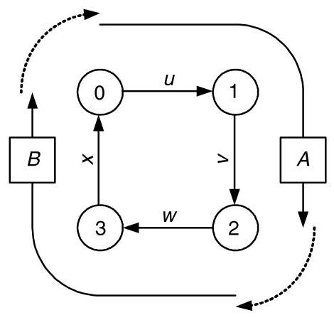
Figure 14.1 Deadlock in a circuit-switched network. Connection A holds channels \(u\) and \(v\) but cannot make progress until it acquires channel \(w\) . At the same time, connection B holds channels \(w\) and \(x\) but cannot make progress until it acquires channel \(u\) . Neither connection will release the channel needed by the other. Hence, they are deadlocked.
图14.1 电路交换网络中的死锁。连接A持有信道\(u\)和\(v\)，但只有在获取信道\(w\)后才能继续前进。同时，连接B持有信道\(w\)和\(x\)，但只有在获取信道\(u\)后才能继续前进。两个连接都不会释放对方所需的信道。因此，它们陷入了死锁。
14.1 Deadlock
14.1.1 Agents and Resources
The agents and resources that are involved in deadlock differ depending on the type of flow control employed, as shown in Table 14.1. For circuit switching, as shown in Figure 14.1, the agents are connections and the resources are physical channels. As a connection is set up, it acquires physical channels and will not release any of them until after the connection is completed. Each connection may indefinitely hold multiple channels, all of the channels along the path from source to destination. With a packet-buffer flow control method (like store-and-forward or virtual cut-through), the agents are packets and the resources are packet buffers. As the head of the packet propagates through the network, it must acquire a packet buffer at each node. At any given point in time, a packet may indefinitely hold only a single packet buffer. Each time the packet acquires a new packet buffer, it releases the old packet buffer a short, bounded time later. With a flit-buffer flow control method, the agents are again packets, but the resources are virtual channels. As the head of the packet advances, it allocates a virtual channel (control state and a number of flit buffers) at each node. It may hold several virtual channels indefinitely, since if the packet blocks, the buffer space in each virtual channel is not sufficient to hold the entire packet.
参与死锁的代理和资源根据所采用的流控类型而有所不同，如表 14.1 所示。对于电路交换，如图 14.1 所示，代理是连接，资源是物理通道。当建立连接时，它会获取物理通道，并且在连接完成之前不会释放其中任何一条。每个连接可能无限期地持有多个通道，即从源到目的地路径上的所有通道。对于包缓冲区流控方法（如存储转发或虚拟直通），代理是包，资源是包缓冲区。当包头在网络中传播时，它必须在每个节点获取一个包缓冲区。在任何给定时间点，一个包可能无限期地只持有一个包缓冲区。每当包获取一个新的包缓冲区，它会在一个短暂的、有界的时间后释放旧的包缓冲区。对于微片缓冲区流控方法，代理仍然是包，但资源是虚拟通道。当包头前进时，它在每个节点分配一个虚拟通道（控制状态和若干微片缓冲区）。它可能无限期地持有多个虚拟通道，因为如果包阻塞，每个虚拟通道中的缓冲区空间不足以容纳整个包。
Table 14.1 Agents and resources causing deadlock for different flow control methods.
表14.1 不同流控制方法下导致死锁的代理和资源
| Flow Control | Agent | Resource | Cardinality |
| Circuit switching | Connection | Physical channel | Multiple |
| Packet-buffer | Packet | Packet buffer | Single |
| Flit-buffer | Packet | Virtual channel | Multiple |
14.1.2 Wait-For and Holds Relations
The agents and resources are related by wait-for and holds relations. Consider, for example, the case of Figure 14.1. The wait-for and holds relationships for this case are illustrated in Figure 14.2(a). Connection A holds (dotted arrows) channels \(u\) and \(v\) and waits for (solid arrow) \(w\) . Similarly connection B also holds two channels and waits for a third. If an agent holds a resource, then that resource is waiting on the agent to release it. Thus, each holds relation induces a wait-for relation in the opposite direction: holds \(\left( {a, b}\right) \Rightarrow\) waitfor \(\left( {b, a}\right)\) . Redrawing the holds edges as wait-for edges in the opposite direction gives the wait-for graph of Figure 14.2(b). The cycle in this graph (shaded) shows that the configuration is deadlocked.
主体与资源之间通过等待与持有关系关联。以图14.1中的情形为例，该情形的等待与持有关系如图14.2(a)所示。连接A持有（虚线箭头）信道\(u\)和\(v\)，并等待（实线箭头）\(w\)。类似地，连接B也持有两个信道并等待第三个信道。若某主体持有一个资源，则该资源正在等待该主体将其释放。因此，每个持有关系都会在相反方向产生一个等待关系：持有\(\left( {a, b}\right) \Rightarrow\) 等待\(\left( {b, a}\right)\)。将持有边反向重绘为等待边，即得到图14.2(b)中的等待图。该图中的环路（阴影部分）表明该配置已陷入死锁。
The cycle of Figure 14.2 consists of alternating edges between agents and resources. The edges from an agent to a resource indicate that the agent is waiting on that resource. The edges in the opposite direction indicate that the resource is held by the indicated agent (and, hence, is waiting on that agent to be released).
图14.2中的循环由代理与资源之间交替的边构成。从代理指向资源的边表示该代理正在等待该资源，反之则表明资源正被所指代理持有（因而正等待该代理将其释放）。
Such a cycle will exist, and hence deadlock will occur, when:
当满足以下条件时，这种循环就会出现，从而导致死锁发生：
- Agents hold and do not release a resource while waiting for access to another.
- 代理人持有并不释放资源，同时等待访问另一资源。
- A cycle exists between waiting agents, such that there exists a set of agents \({A}_{0},\ldots ,{A}_{n - 1}\) , where agent \({A}_{i}\) holds resource \({R}_{i}\) while waiting on resource \({R}_{\left( i + 1{\;\operatorname{mod}\;\mathrm{n}}\right) }\) for \(i = 0,\ldots , n - 1\) .
- 等待的代理之间存在一个循环，即存在一组代理 \({A}_{0},\ldots ,{A}_{n - 1}\)，其中代理 \({A}_{i}\) 持有资源 \({R}_{i}\) 并同时等待资源 \({R}_{\left( i + 1{\;\operatorname{mod}\;\mathrm{n}}\right) }\)，对于 \(i = 0,\ldots , n - 1\)。
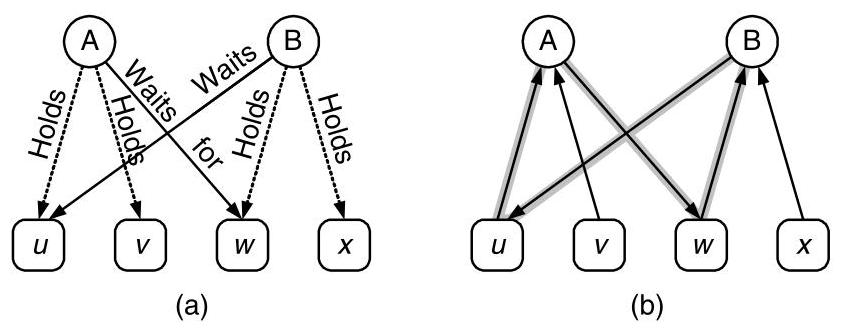
Figure 14.2 Wait-for and holds relationships for the deadlock example of Figure 14.1. (a) Connections A and B each hold two channels (dotted arrows) and wait for a third (solid arrows). (b) Each holds relation implies a wait-for relation in the opposite direction. Redrawing the graph using only wait-for relations reveals the wait-for cycle causing deadlock (shaded).
图14.2 针对图14.1死锁示例的等待与持有关系。(a) 连接A和连接B各自持有两个通道（虚线箭头），并等待第三个通道（实线箭头）。(b) 每一个持有关系都意味着相反方向的等待关系。仅用等待关系重新绘制该图，就能揭示出导致死锁的等待循环（阴影部分）。
14.1.3 Resource Dependences
For two resources \({R}_{i}\) and \({R}_{i + 1}\) to be two edges apart in the wait-for graph, it must be possible for the agent \({A}_{i}\) holding resource \({R}_{i}\) to wait indefinitely on resource \({R}_{i + 1}\) . Whenever it is possible for an agent holding \({R}_{i}\) to wait on \({R}_{i + 1}\) , we say that a resource dependence exists from \({R}_{i}\) to \({R}_{i + 1}\) and denote this as \({R}_{i} \succ {R}_{i + 1}\) . In the example of Figure 14.1, we have \(u \succ v \succ w \succ x \succ u\) . Note that resource dependence \(\left( \succ \right)\) is a transitive relation. If \(a \succ b\) and \(b \succ c\) , then \(a \succ c\) .
为了使两个资源 \({R}_{i}\) 和 \({R}_{i + 1}\) 在等待图中相距两条边，必须存在持有资源 \({R}_{i}\) 的智能体 \({A}_{i}\) 无限期等待资源 \({R}_{i + 1}\) 的可能性。当持有 \({R}_{i}\) 的智能体有可能等待 \({R}_{i + 1}\) 时，我们称存在从 \({R}_{i}\) 到 \({R}_{i + 1}\) 的资源依赖，并记作 \({R}_{i} \succ {R}_{i + 1}\)。在图 14.1 的示例中，有 \(u \succ v \succ w \succ x \succ u\)。注意资源依赖 \(\left( \succ \right)\) 是一个传递关系。如果 \(a \succ b\) 且 \(b \succ c\)，那么 \(a \succ c\)。
This cycle of resource dependences is illustrated in the resource (channel) dependence graph of Figure 14.3. This graph has a vertex for each resource (in this case, each channel) and edges between the vertices denote dependences - for example, to denote that \(u \succ v\) we draw an edge from \(u\) to \(v\) .
这种资源依赖循环在图14.3的资源（通道）依赖图中得到了说明。在该图中，每个资源（本例中为每条通道）对应一个顶点，顶点之间的边表示依赖关系——例如，为了表示\(u \succ v\)，我们从\(u\)向\(v\)画一条边。
Because the example of Figure 14.1 deals with circuit switching, the resources are physical channels and our resource dependence graph is a physical channel dependence graph. With packet-buffer flow control, we would use a packet-buffer dependence graph. Similarly, with flit-buffer flow control, we would use a virtual-channel dependence graph.
由于图 14.1 的例子涉及电路交换，资源是物理通道，我们的资源依赖图便是一个物理通道依赖图。在采用包缓冲流控时，我们会使用包缓冲依赖图。类似地，在采用微片缓冲流控时，我们会使用虚拟通道依赖图。
A cycle of resource dependences in a resource dependence graph (as in Figure 14.3) indicates that it is possible for a deadlock to occur. For a deadlock to actually occur requires that agents (connections) actually acquire some resource and wait on others in a manner that generates a cycle in the wait-for graph. A cycle in a resource dependence graph is a necessary but not sufficient condition for deadlock. A common strategy to avoid deadlock is to remove all cycles from the resource dependence graph. This makes it impossible to form a cycle in the wait-for graph, and thus impossible to deadlock the network.
资源依赖图中存在资源依赖循环（如图14.3所示）表明死锁有可能发生。死锁实际发生需要代理（连接）确实获取了某些资源，并以形成等待图循环的方式等待其他资源。资源依赖图中的循环是死锁的必要非充分条件。避免死锁的常见策略是消除资源依赖图中的所有循环，从而不可能在等待图中形成循环，进而使网络不可能死锁。
14.1.4 Some Examples
Consider the four-node ring network of Figure 14.1 but using packet-buffer flow control with a single packet buffer per node. In this case, the agents are packets and the resources are packet buffers. The packet-buffer dependence graph for this situation is shown in Figure 14.4 (a). A packet resident in the buffer on node 0 \(\left( {B}_{0}\right)\) will not release this buffer until it acquires \({B}_{1}\) , so we have \({B}_{0} \succ {B}_{1}\) and the dependence graph has an edge between these two buffers.
考虑图14.1中的四节点环形网络，但采用每个节点一个数据包缓冲区的数据包缓冲区流控制。在这种情况下，代理是数据包，资源是数据包缓冲区。这种情况的数据包缓冲区依赖图如图14.4（a）所示。驻留在节点0的缓冲区\(\left( {B}_{0}\right)\)中的数据包在获取\({B}_{1}\)之前不会释放该缓冲区，因此我们有\({B}_{0} \succ {B}_{1}\)，并且依赖图中在这两个缓冲区之间有一条边。
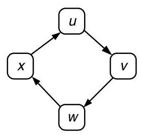
Figure 14.3 Resource (channel) dependence graph for the example of Figure 14.1
图 14.3 图 14.1 示例的资源（通道）依赖图
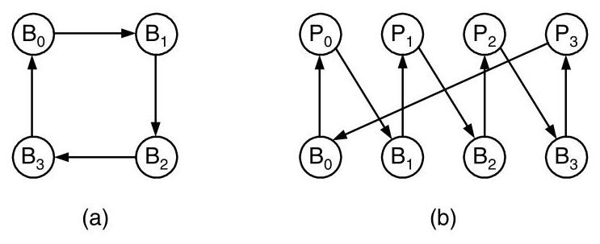
Figure 14.4 Dependence and wait-for graphs for packet-buffer flow control. (a) Resource (packet buffer) dependence graph for the network of Figure 14.1 using packet-buffer flow control with a single packet buffer per node. (b) Wait-for graph for a deadlocked configuration with four packets holding four packet buffers.
图 14.4 包缓冲区流控的依赖图与等待图。(a) 针对图 14.1 网络使用包缓冲区流控且每个节点只有一个包缓冲区的资源（包缓冲区）依赖图。(b) 四个包占用四个包缓冲区时死锁配置的等待图。
The cycle in the packet buffer dependence graph indicates the potential for deadlock in this network. To actually construct a deadlock situation in this case requires four packets, \({P}_{0},\ldots ,{P}_{3}\) , each holding one buffer and waiting for the next. The wait-for graph for this deadlocked configuration is shown in Figure 14.4(b). Each buffer \({B}_{i}\) waits on the packet that holds it, \({P}_{i}\) , to release it. Each packet in turn waits on buffer \({B}_{i + 1}\) to advance around the ring. We cannot construct a cycle in this wait-for graph with fewer than four packets, since the cycle in the buffer dependence graph is of length four and, with packet-buffer flow control, each packet can hold only a single buffer at a time.
数据包缓冲区依赖图中的环路表明该网络存在死锁的潜在可能。在本例中实际构造一个死锁情形需要四个数据包：\({P}_{0},\ldots ,{P}_{3}\)，每个数据包占有一个缓冲区并等待下一个。该死锁配置的等待图如图14.4(b)所示。每个缓冲区\({B}_{i}\)等待占有它的数据包\({P}_{i}\)将其释放。每个数据包则依次等待缓冲区\({B}_{i + 1}\)，以便沿环路推进。我们无法用少于四个数据包构建此等待图中的环路，因为缓冲区依赖图中的环路长度为四，并且在数据包‑缓冲区流控制下，每个数据包一次只能占有一个缓冲区。
Now consider the same four-node ring network, but using flit-buffer flow control with a two virtual channels for each physical channel. We assume that a packet in either virtual channel of one physical channel can choose either virtual channel of the next physical channel to wait on. Once a packet has chosen one of the virtual channels, it will continue to wait on this virtual channel, even if the other becomes free. \({}^{1}\) The virtual channel dependence graph for this case is shown in Figure 14.5(a). Because a packet holding either of the virtual channels for one link can wait on either of the virtual channels for the next link, there are edges between all adjacent channels in this graph.
现在考虑同样的四节点环形网络，但采用带有两个虚通道的微片缓冲流控，每个物理通道对应两个虚通道。假设一个物理通道的任一虚通道中的数据包，都可以选择下一物理通道的任一虚通道进行等待。一旦数据包选定某个虚通道，就会一直等待在该虚通道上，即使另一个虚通道变为空闲。\({}^{1}\) 此种情况下的虚通道依赖图如图14.5(a)所示。由于一条链路上任一虚通道所持有的数据包，都可以等待下一条链路的任一虚通道，因此在该图中所有相邻通道之间都存在边。
A wait-for graph showing a deadlocked configuration of this flit-buffer network is shown in Figure 14.5(b). The situation is analagous to that shown in Figure 14.2, but with packets and virtual channels instead of connections and physical channels. Packet \({P}_{0}\) holds virtual channels \({u0}\) and \({v0}\) and is waiting for \({w0}\) . At the same time, \({P}_{1}\) holds \({w0}\) and \({x0}\) and is waiting for \({v0}\) . The "1" virtual channels are not used at all. If packet \({P}_{0}\) were allowed to use either \({w}_{0}\) or \({w}_{1}\) , this configuration would not represent a deadlock. A deadlocked configuration of this network when packets are allowed to use any unclaimed virtual channel at each hop requires four packets. Generating this configuration is left as Exercise 14.1.
图14.5(b)展示了该微片缓冲器网络死锁配置的等待图。该情况与图14.2所示类似，但涉及的是数据包和虚拟通道，而非连接和物理通道。数据包\({P}_{0}\)持有虚拟通道\({u0}\)和\({v0}\)，并正在等待\({w0}\)。同时，\({P}_{1}\)持有\({w0}\)和\({x0}\)，并正在等待\({v0}\)。“1”号虚拟通道完全没有被使用。如果允许数据包\({P}_{0}\)使用\({w}_{0}\)或\({w}_{1}\)，此配置就不会形成死锁。当允许数据包在每一跳使用任何未被占用的虚拟通道时，该网络的一个死锁配置需要四个数据包。生成此配置留作练习14.1。
virtual channel as Exercise 14.1 .
如习题 14.1 所示的虚拟通道。
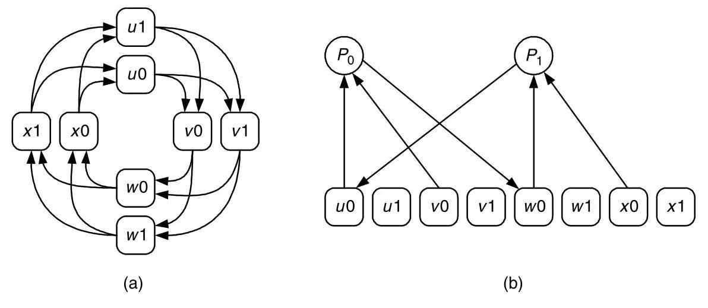
Figure 14.5 Dependence and wait-for graphs for flit-buffer flow control. (a) Resource (virtual channel) dependence graph for the network of Figure 14.1 using flit-buffer flow control with two virtual channels per physical channel. (b) Wait-for graph for a deadlocked configuration with two packets holding two virtual channels each.
图14.5 微片缓冲流控的依赖图与等待图。(a) 图14.1所示网络采用微片缓冲流控（每条物理通道两个虚通道）时的资源（虚通道）依赖图。(b) 发生死锁配置的等待图，其中两个报文各占用两个虚通道。
14.1.5 High-Level (Protocol) Deadlock
Deadlock may be caused by dependences external to the network. For example, consider the case shown in Figure 14.6. The top network channel is waiting for the server to remove a request packet from the network. The server in turn has limited buffering and thus cannot accept the request packet until the lower channel accepts a reply packet from the server's output buffer. In effect, the upper channel is waiting on the lower channel due to the external sever. This edge of the wait-for graph is due not to the network itself, but to the server. Deadlock caused by wait-for loops that include such external edges are often called high-level deadlock or protocol deadlock.
死锁可能由网络外部的依赖关系引起。例如，考虑图14.6所示的情况。上层网络通道正在等待服务器从网络中取出一个请求包。而服务器的缓冲空间有限，因此无法接收该请求包，直到下层通道从服务器的输出缓冲区接收一个应答包为止。实际上，由于外部服务器，上层通道在等待下层通道。等待图中的这条边并非源于网络本身，而是源于服务器。由包含此类外部边的等待环路引起的死锁通常称为高级死锁或协议死锁。
In a shared-memory multiprocessor, for example, such an external wait-for edge may be caused by the memory server at each node, which accepts memory read and write request packets, reads or writes the local memory as requested, and sends a response packet back to the requesting node. If the server has limited internal buffering, the situation is exactly as depicted in Figure 14.6 and the channel into the server may have to wait on the channel out of the server. The effect of these external wait-for edges can be eliminated by using different logical networks (employing disjoint resource sets - for example, separate virtual channels or packet buffers) to handle requests and replies. The situation can become even more complex in cache-coherent, shared memory machines where a single transaction may traverse two or three servers (directory, current owner, directory) in sequence before returning the final reply. Here separate logical networks are often employed at each step of the transaction.Using these separate logical networks to avoid protocol deadlock is a special case of resource ordering, as described in Section 14.2.
在共享内存多处理器中，例如，这种外部等待边可能由每个节点的内存服务器引起，该服务器接收内存读和写请求包，按请求读取或写入本地内存，并发送响应包回请求节点。如果服务器内部缓冲有限，情况就如图14.6所示，进入服务器的通道可能必须等待离开服务器的通道。这些外部等待边的影响可以通过使用不同的逻辑网络（使用不相交的资源集——例如，单独的虚拟通道或数据包缓冲区）处理请求和应答来消除。在缓存一致性的共享内存机器中，情况可能变得更为复杂，单个事务在返回最终应答之前，可能依次穿越两个或三个服务器（目录、当前拥有者、目录）。此处，通常在事务的每一步均采用单独的逻辑网络。使用这些单独的逻辑网络来避免协议死锁是资源排序的一种特殊情形，如第14.2节所述。
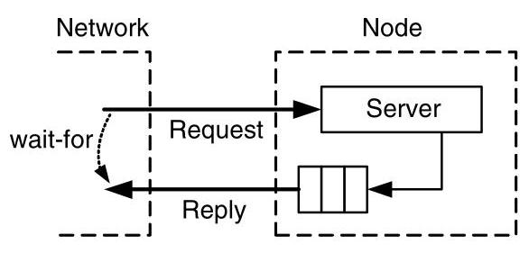
Figure 14.6 Implicit resource dependence in a request-reply system.
图 14.6 请求‑应答系统中的隐式资源依赖
14.2 Deadlock Avoidance
Deadlock can be avoided by eliminating cycles in the resource dependence graph. This can be accomplished by imposing a partial order on the resources and then insisting that an agent allocate resources in ascending order. Deadlocks are therefore avoided because any cycle must contain at least one agent holding a higher-numbered resource waiting for a lower-numbered resource, and this is not allowed by the ordered allocation. While a partial order suffices to eliminate cycles, and hence deadlocks, for simplicity we often impose a total order on the resources by numbering them.
可以通过消除资源依赖图中的循环来避免死锁。这可以通过对资源施加偏序，并要求代理按升序分配资源来实现。因此，死锁得以避免，因为任何循环中必然至少有一个代理持有编号较高的资源却等待编号较低的资源，而有序分配不允许这种情况发生。尽管偏序足以消除循环进而避免死锁，但为简单起见，我们通常通过对资源编号来施加全序。
While all deadlock avoidance techniques use some form of resource ordering, they differ in how the restrictions imposed by this resource ordering affect routing. With some approaches, resources can be allocated in order with no restrictions on routing. In other approaches, the number of required resources is reduced at the expense of disallowing some routes that would otherwise violate resource ordering.
尽管所有死锁避免技术都采用某种形式的资源排序，但它们的不同之处在于这种资源排序所施加的限制如何影响路由。在一些方法中，资源可以按顺序分配，对路由没有任何限制。而在其他方法中，所需资源的数量得以减少，但代价是不允许某些原本会违反资源排序的路由。
With packet-buffer flow control, we have the advantage that there are typically many packet buffers associated with each node. Similarly, there are typically many virtual channels associated with each physical channel in systems using flit-buffer flow control. With multiple resources per physical unit, we can achieve our ordering by assigning different resources on the same physical unit (for example, different packet buffers on a node) to different positions in the order. With circuit switching, the resources are the physical units (channels) and thus each channel can appear only at a single point in the ordering. Thus, to order resources with circuit switching, we have no alternative but to restrict routing.
使用包缓冲流控时，我们具有的优势是每个节点通常关联着许多包缓冲区。类似地，在使用微片缓冲流控的系统中，每个物理通道通常关联着许多虚通道。由于每个物理单元拥有多个资源，我们可以通过将同一物理单元上的不同资源（例如节点上的不同包缓冲区）分配到顺序中的不同位置来实现排序。而在电路交换中，资源就是物理单元（通道），因此每个通道在顺序中只能出现在单一位置。因此，要在电路交换中对资源进行排序，我们别无选择，只能限制路由。
14.2.1 Resource Classes
Distance Classes: One approach to ordering resources (virtual channels or packet buffers) is to group the resources into numbered classes and restrict allocation of resources so that packets acquire resources from classes in ascending order. One method of enforcing ascending resource allocation is to require a packet at distance \(i\) from its source to allocate a resource from class \(i\) . At the source, we inject packets into resource class 0 . At each hop, the packet acquires a resource of the next highest class. With this system, a packet holding a packet-buffer from class \(i\) can wait on a buffer only in class \(i + 1\) (Figure 14.7). \({}^{2}\) Similarly, a packet holding a virtual channel in class \(i\) can only wait on virtual channels in higher numbered classes. Packets only travel uphill in terms of resource classes as they travel through the network. Because a packet holding a resource (packet-buffer or virtual channel) from class \(i\) can never wait, directly or indirectly, on a resource in the same or lower numbered class, no cycle in the resource dependence graph exists and hence deadlock cannot occur.
距离分类：对资源（虚拟通道或数据包缓冲区）进行排序的一种方法是，将这些资源分组为带编号的类别，并限制资源的分配，使得数据包按编号升序从各类别中获取资源。一种强制升序资源分配的方法是，要求距其源节点距离为\(i\)的数据包从类别\(i\)中分配资源。在源节点处，我们将数据包注入资源类别0。在每一跳，数据包获取下一个最高类别的资源。使用这种系统，持有类别\(i\)中数据包缓冲区的数据包只能等待类别\(i + 1\)中的缓冲区（图14.7）。\({}^{2}\)类似地，持有类别\(i\)中虚拟通道的数据包只能等待编号更高的类别中的虚拟通道。数据包在网络中传输时，在资源类别上只能向上行进。由于持有类别\(i\)中资源（数据包缓冲区或虚拟通道）的数据包永远无法直接或间接地等待同一或更低编号类别中的资源，因此资源依赖图中不存在循环，从而不会发生死锁。
As a concrete example of distance classes, Figure 14.8 shows a four-node ring network using buffer classes based on distance. Each node \(i\) has four buffers \({B}_{ji}\) , each of which holds packets that have traveled \(j\) hops so far. Packets in buffer \({B}_{ji}\) are either delivered to the local node \(i\) or forwarded to buffer \({B}_{j + 1, i + 1}\) on node \(i\) . This buffer structure leads to an acyclic buffer dependence graph that consists of four spirals, and hence avoids deadlock.
作为距离类的一个具体示例，图14.8展示了一个采用基于距离的缓冲区类的四节点环形网络。每个节点 \(i\) 配有四个缓冲区 \({B}_{ji}\) ，分别存放当前已行进 \(j\) 跳的数据包。位于缓冲区 \({B}_{ji}\) 的数据包要么交付给本地节点 \(i\) ，要么转发到节点 \(i\) 上的缓冲区 \({B}_{j + 1, i + 1}\) 。这种缓冲区结构形成了一个由四条螺旋线组成的无环缓冲区依赖图，从而避免了死锁。
To enforce the uphill-only resource allocation rule, each packet needs to remember its previous resource class when it allocates its next resource. Thus, for packet-buffer flow control with distance classes, the routing relation takes the form:
为了强制执行仅允许向上行的资源分配规则，每个数据包在分配下一个资源时需要记住其先前的资源类。因此，对于采用距离类的数据包缓冲区流量控制，路由关系具有如下形式：
\[ R : Q \times N \rightarrow Q \]
where \(Q\) is the set of all buffer classes in the network. A similar relation is used to allocate virtual channels in a network with flit-buffer flow control. This hop-by-hop routing relation allows us to express the uphill use of buffer classes.
其中 \(Q\) 是网络中所有缓冲区类别的集合。类似的关系统用于在采用微片缓冲流控制的网络中分配虚拟通道。这种逐跳路由关系允许我们表达缓冲区类别的上行使用。
Distance classes provide a very general way to order resources in any topology. However, they do so at considerable expense - they require a number of packet buffers (or virtual channels) proportional to the diameter of the network. For some networks, we can take advantage of the topology to reduce the number of buffer classes significantly. For example, in a ring network, we can order resources by providing just two classes of resources. \({}^{3}\)
距离类别提供了一种在任何拓扑中对资源进行排序的非常通用的方法。然而，这需要付出相当大的代价——它们所需的数据包缓冲区（或虚通道）数量与网络的直径成正比。对于某些网络，我们可以利用拓扑结构显著减少缓冲类别的数量。例如，在环形网络中，只需提供两类资源即可对资源进行排序。\({}^{3}\)
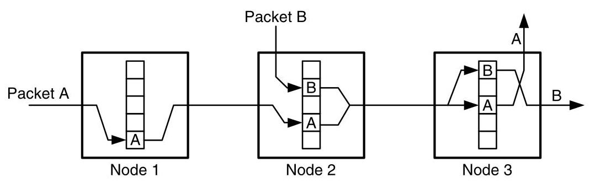
Figure 14.7 An example of routing packets through several buffer classes. Each node contains five buffer classes with the lowest class at the bottom of the buffers and the highest class at the top. As packets A and B progress through the network, their buffer classes increase.
图14.7 一个通过多个缓冲区类路由分组的示例。每个节点包含五个缓冲区类，最低类位于缓冲区底部，最高类位于顶部。随着分组A和B在网络中前进，它们的缓冲区类逐渐增加。
- We could allow a packet to wait for any buffer class greater than the one it currently holds. If we do this, however, we cannot guarantee that it will not run out of classes by skipping too many on the way up the hill.
- 我们可以允许数据包等待任何大于其当前所持有的缓冲区类别。然而，如果我们这样做，就无法保证它不会因为在上坡过程中跳过太多类别而耗尽所有类别。
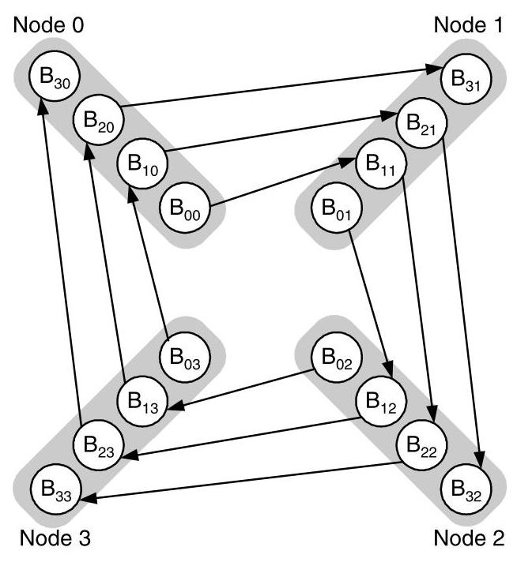
Figure 14.8 Distance classes applied to a four-node ring network. Each node \(i\) has four classes, with buffer \({B}_{ji}\) handling traffic at node \(i\) that has taken \(j\) hops toward its destination.
图 14.8 应用于四节点环状网络的距离类别。每个节点 \(i\) 具有四个类别，缓冲区 \({B}_{ji}\) 处理节点 \(i\) 处已向其目的地行进 \(j\) 跳的流量。
Figure 14.9 shows how buffer dependences can be made acyclic in a ring by using dateline buffer classes. Each node \(i\) has two buffers, a " 0 " buffer \({B}_{0i}\) and a " 1 " buffer \({B}_{1i}\) . A packet injected at source node \(s\) is initially placed in buffer \({B}_{0s}\) and remains in the " 0 " buffers until it reaches the dateline between nodes 3 and 0 . After crossing the dateline, the packet is placed in " 1 " buffer \({B}_{10}\) and remains in the " 1 " buffer until it reaches its destination. Dividing the use of the two buffer classes based on whether or not a packet has passed the dateline in effect converts the cycle of buffer dependences into an acyclic spiral. Hence deadlock is avoided.
图14.9展示了如何使用日期变更线缓存类别使环形结构中的缓存依赖变为无环。每个节点 \(i\) 有两个缓存，一个“0”缓存 \({B}_{0i}\) 和一个“1”缓存 \({B}_{1i}\)。在源节点 \(s\) 注入的数据包最初被放置在缓存 \({B}_{0s}\) 中，并一直停留在“0”缓存中，直至到达节点3和0之间的日期变更线。越过日期变更线后，数据包被放入“1”缓存 \({B}_{10}\)，并一直停留在“1”缓存中，直到抵达目的地。根据数据包是否已越过日期变更线来划分两类缓存的使用，实际上将循环的缓存依赖转变为一个无环的螺旋结构，从而避免了死锁。
Dateline classes can also be applied to flit-buffer flow control. Figure 14.10 shows the virtual channel dependence graph for an application of dateline classes to a four-node ring with two virtual channels per physical channel. Each physical channel \(c\) has two virtual channels \({c0}\) and \({c1}\) . All packets start by using the " 0 " channels and switch to the "l" channels only when they cross the dateline at node 3 . To restrict the selection of output virtual channel based on input virtual channel, this approach requires that the routing function be of the form
Dateline 类也可以应用于 flit 缓冲流控制。图 14.10 展示了将 dateline 类应用于一个四节点环（每条物理通道有两个虚拟通道）时的虚拟通道依赖图。每条物理通道 \(c\) 有两个虚拟通道 \({c0}\) 和 \({c1}\)。所有数据包开始时都使用“0”通道，只有当它们越过节点 3 处的 dateline 时才会切换至“l”通道。为根据输入虚拟通道来限制输出虚拟通道的选择，该方法要求路由函数具有以下形式
\[ R : C \times N \rightarrow C \]
266 CHAPTER 14 Deadlock and Livelock where \(C\) here represents the set of virtual channels. Restricting the selection of virtual channels here takes the cyclic channel dependence graph of Figure 14.5 and makes it acyclic by removing a number of edges.
266 第14章 死锁与活锁
其中 \(C\) 表示虚拟通道的集合。此处对虚拟通道选择的限制，将图14.5中的循环通道依赖图通过移除若干边，使其变为无环图。
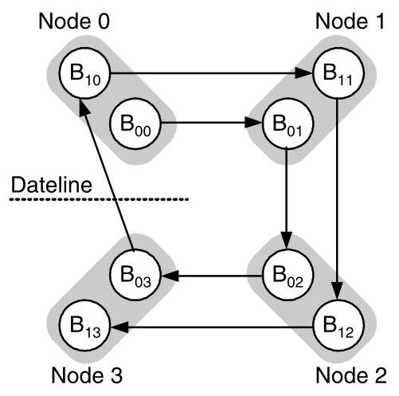
Figure 14.9 With dateline buffer classes, each node \(i\) in a ring has two buffers \({B}_{1i}\) and \({B}_{0i}\) . A packet injected on node \(s\) starts in buffer \({B}_{s0}\) and remains in the " 0 " buffers until it reaches the dateline between nodes 3 and 0 . After crossing the dateline, the packet is placed in buffer \({B}_{10}\) and remains in the " 1 " buffers until it reaches its destination.
图 14.9 采用日期变更线缓冲类别时，环中的每个节点 \(i\) 都有两个缓冲区 \({B}_{1i}\) 和 \({B}_{0i}\)。在节点 \(s\) 上注入的数据包从缓冲区 \({B}_{s0}\) 开始，并一直留在“0”缓冲区中，直到它到达节点 3 与 0 之间的日期变更线。越过日期变更线后，数据包被放入缓冲区 \({B}_{10}\)，并一直留在“1”缓冲区中，直到抵达目的地。
Overlapping Resource Classes: Restricting the use of resource classes, either according to distance or datelines, while making the resource dependence graph acyclic, can result in significant load imbalance. In Figure 14.10, for example, under uniform traffic, more packets will use virtual channel \({v0}\) (5 routes) than will use \({v1}\) (1 route). This load imbalance can adversely affect performance because some resources may be left idle, while others are oversubscribed. Similarly, with distance classes, not every route will use the maximum number of hops, so the higher numbered classes will tend to have lower utilization.
重叠资源类：通过距离或日期线来限制资源类的使用，虽然能使资源依赖图无环，但可能导致严重的负载不平衡。例如，在图14.10中，在均匀流量下，使用虚拟通道 \({v0}\) 的数据包（5条路由）会比使用 \({v1}\) 的数据包（1条路由）多得多。这种负载不平衡会对性能产生不利影响，因为某些资源可能闲置，而其他资源则被过度占用。类似地，对于距离类，不是每条路由都会使用最大跳数，因此编号较高的类往往利用率较低。
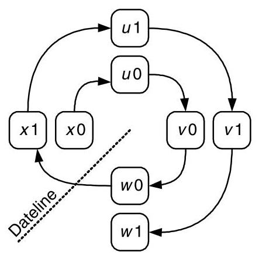
Figure 14.10 Virtual channels divided into dateline classes. Each physical channel \(c\) on a four-node ring is divided into two virtual channels \({c0}\) and \({c1}\) . All packets start routing on the " 0 " virtual channels and switch to the " 1 " virtual channels when they cross the dateline at node 3 .
图 14.10 虚拟通道划分为日期线类。在四节点环上，每条物理通道 \(c\) 被划分为两个虚拟通道 \({c0}\) 和 \({c1}\) 。所有数据包一开始在 "0" 虚拟通道上进行路由，当它们跨越节点 3 处的日期线时，就切换到 "1" 虚拟通道。
One approach to reducing load imbalance is to overlap buffer classes. For example, with dateline classes, suppose we have 32 packet buffers. We could assign 16 buffers each to classes " 0 " and " 1 " as illustrated in Figure 14.11(a). However, a better approach is to assign one buffer each for exclusive use by each class, and allow the remaining 30 buffers to be used by either class as shown in Figure 14.11(b). This approach reduces load imbalance by allowing most of the buffers to be used by packets requiring either class.
减少负载不均衡的一种方法是重叠缓冲区类别。例如，对于日期线类别，假设我们有 32 个数据包缓冲区。我们可以如图 14.11(a) 所示，为类别“0”和“1”各分配 16 个缓冲区。然而，更好的方法是为每个类别各分配一个专有缓冲区，并允许其余 30 个缓冲区可由任一类别使用，如图 14.11(b) 所示。这种方法通过允许大部分缓冲区被需要任一类别缓冲区的数据包使用，从而减少了负载不均衡。
It is important when overlapping classes, however, to never allow a packet to wait on a busy resource in the overlap region. That is, the packet cannot select a busy buffer that belongs to both classes - say, \({B}_{11}\) - and then wait on \({B}_{11}\) . If it does so, it might be waiting on a packet of the other class and hence cause a deadlock. To avoid deadlock with overlapped classes, a packet must not select a particular buffer to wait on until an idle buffer of the appropriate class is available. By waiting on the class, the packet is waiting for any buffer in the class to become idle and thus will eventually be satisfied by the one exclusive buffer in the class. If a non-exclusive buffer becomes available sooner, that can boost performance, but it doesn't alter the correctness of waiting for the exclusive buffer.
在重叠类别时，重要的是绝不能让数据包在重叠区域中等待一个忙碌的资源。也就是说，数据包不能选择一个同时属于两个类别的忙碌缓冲区——比如 \({B}_{11}\)——然后在该 \({B}_{11}\) 上等待。如果它这样做，就可能正在等待另一个类别的数据包，从而引发死锁。为避免重叠类别下的死锁，数据包在适当类别的空闲缓冲区可用之前，不得选择特定缓冲区来等待。通过在该类别上等待，数据包是在等待该类别中的任何一个缓冲区变为空闲，因此终将被该类别中唯一的独占缓冲区所满足。若某个非独占缓冲区更早可用，这能提升性能，但并不改变等待独占缓冲区这一做法的正确性。
14.2.2 Restricted Physical Routes
Although structuring the resources of a network into classes allows us to create a deadlock-free network, this can, in some cases, require a large number of resources to ensure no cyclic resource dependences. An alternative to structuring the resources to accommodate all possible routes is to restrict the routing function. Placing appropriate restrictions on routing can remove enough dependences between resources so that the resulting dependence graph is acyclic without requiring a large number of resource classes.
尽管将网络资源结构化为类可以构建无死锁网络，但在某些情况下，这可能需要大量资源来确保不存在循环资源依赖。替代按照所有可能路由来结构化资源的一种方法是限制路由函数。对路由施加适当限制，能够消除足够的资源间依赖，使得最终的依赖图无环，而无需大量资源类。
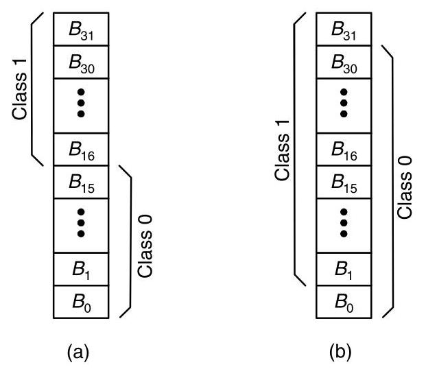
Figure 14.11 Two methods to partition 32 buffers into 2 classes. (a) Sixteen buffers are assigned to each class with no overlap. (b) 31 buffers are assigned to each class with an overlap of 30 buffers. As long as the overlap is not complete, the classes are still independent for purposes of deadlock avoidance.
图 14.11 将 32 个缓冲区划分为两个类别的两种方法。（a）每个类别分配 16 个缓冲区，互不重叠。（b）每个类别分配 31 个缓冲区，重叠 30 个缓冲区。只要重叠不覆盖全部，这两个类别在死锁避免的意义上就仍然是独立的。
Dimension Order (e-cube) Routing: One of the simplest restrictions on routing to guarantee deadlock freedom is to employ dimension-order routing in \(k\) -ary \(n\) -meshes. (See Section 8.4.2.) For example, consider a 2-D mesh. Within the first dimension \(x\) , a packet traveling in the \(+ x\) direction can only wait on a channel in the \(+ x, + y\) , and \(- y\) directions. Similarly, an \(- x\) packet waits only on the \(- x, + y\) , and \(- y\) directions. In the second dimension, a \(+ y\) packet can only wait on other \(+ y\) channels and a \(- y\) packet waits only on \(- y\) . These relationships can be used to enumerate the channels of the network, guaranteeing freedom from deadlock.
维序（e-cube）路由：保证无死锁的最简单的路由限制之一是在 \(k\) 元 \(n\) 网格中采用维序路由（参见第 8.4.2 节）。例如，考虑一个二维网格。在第一维 \(x\) 内，沿 \(+ x\) 方向传输的数据包只能等待 \(+ x\)、\(+ y\) 和 \(- y\) 方向上的通道。类似地，\(- x\) 方向的数据包仅等待 \(- x\)、\(+ y\) 和 \(- y\) 方向上的通道。在第二维中，\(+ y\) 方向的数据包只能等待其他 \(+ y\) 通道，而 \(- y\) 方向的数据包仅等待 \(- y\) 通道。这些关系可用于枚举网络通道，从而保证无死锁。
An example enumeration for dimension-order routing is shown in Figure 14.12 for a \(3 \times 3\) mesh. Right-going channels are numbered first, so that their values increase to the right. Then the left, up, and down channels are numbered, respectively. Now, any dimension-order route through the network follows increasingly numbered channels. Similar enumerations work for an arbitrary number of dimensions once a fixed dimension order is chosen.
针对维序路由的枚举示例如图 14.12 所示，以 \(3 \times 3\) 网格为例。首先对向右的通道进行编号，因此其数值向右递增。然后依次对向左、向上和向下的通道进行编号。此时，网络中任意一条维序路由都会沿着编号递增的通道前进。只要选定了固定的维序，类似的枚举方法适用于任意维数。
The Turn Model: While dimension-order routing provides a way of restricting the routing algorithm to prevent cyclic dependences in \(k\) -ary \(n\) -mesh networks, a more general framework for restricting routing algorithms in mesh networks is the turn model. In the turn model, possible deadlock cycles are defined in terms of the particular turns needed to create them. We will consider this model in two dimensions, although it can be extended to an arbitrary number of dimensions. As shown in
转弯模型：虽然维序路由提供了一种限制路由算法以防止在 \(k\) -ary \(n\) -mesh 网络中出现循环依赖的方法，但在 mesh 网络中限制路由算法的一个更通用的框架是转弯模型。在转弯模型中，可能的死锁循环是根据产生这些循环所需的特定转弯来定义的。我们将在二维中考虑该模型，尽管它可以扩展到任意维数。如图所示
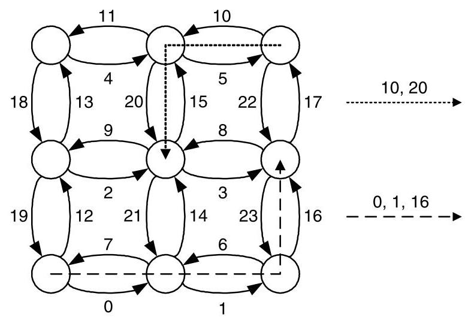
Figure 14.12 Enumeration of a \(3 \times 3\) mesh in dimension-order routing. The channel order for two routes is also shown.
图 14.12 维序路由中 \(3 \times 3\) 网格的枚举。同时展示了两种路由的通道顺序。
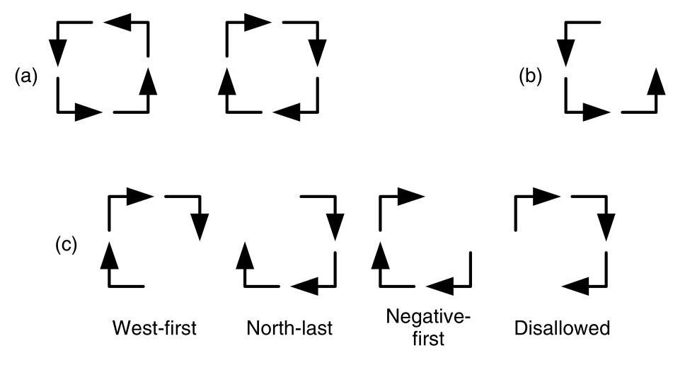
Figure 14.13 The turn model for a two-dimension mesh network. (a) The two abstract cycles. (b) If the North to West is eliminated (c) three possible routing algorithms can be created by eliminating another turn in the other abstract cycle.
图 14.13 二维网格网络的转向模型。(a) 两个抽象环。(b) 如果消除北向西的转向，(c) 则可以通过在另一个抽象环中再消除一个转向来创建三种可能的路由算法。
Figure 14.13(a), there are eight turns in a 2-D routing algorithm ( \(+ x\) to \(+ y, + x\) to \(- y\) , \(- x\) to \(+ y\) , and so on), which can be combined to create two abstract cycles. By inspection, at least one turn from each of these two cycles must be eliminated to avoid deadlock. Dimension-order routing, for example, eliminates two turns in each of the cycles - those from any \(y\) dimension to any \(x\) dimension.
在图14.13(a)中，一个2-D路由算法包含八个转向（\(+x\) 到 \(+y\)、\(+x\) 到 \(-y\)、\(-x\) 到 \(+y\) 等），这些转向可以组合形成两个抽象循环。通过观察，必须从这两个循环中各自消除至少一个转向才能避免死锁。例如，维序路由就消除了每个循环中的两个转向——即所有从\(y\)维到\(x\)维的转向。
We can explore a set of routing functions that is less restrictive than dimension-order routing by first eliminating one of the turns from the first abstract cycle. Figure 14.13(b) shows the elimination of the North to West turn (that is, the turn from \(+ y\) to \(- x\) ). Combining this with a turn elimination in the second cycle yields three deadlock-free routing algorithms, as illustrated in Figure 14.13(c). The fourth possible elimination is not deadlock-free, as explored in Exercise 14.3.
通过首先从第一个抽象环路中消除一个转弯，我们可以探索一组限制性弱于维序路由的路由函数。图14.13(b)展示了消除“北向西”转弯（即从 \(+ y\) 转向 \(- x\) 的转弯）。将此与第二个环路中的一个转弯消除相结合，可得到三种无死锁路由算法，如图14.13(c)所示。第四种可能的消除方式并不无死锁，详见练习14.3。
Each of the three choices yields a different routing algorithm. When the south-to-west turn is eliminated, the west-first algorithm is generated. In west-first routing, a packet must make all of its west hops before moving in any other direction. After it turns from the west direction, it may route in any other direction except west. Removing the north-to-east turn results in north-last routing. In north-last, a packet may move freely between the directions except north. Once the packet turns north, it must continue in the north direction until its destination. Finally, eliminating the east-to-south turn gives negative-first routing. In negative-first routing, a packet must move completely in the negative directions (south and west) before changing to the positive directions (north and east). Once in the positive directions, the packet stays there until it reaches its destination.
这三种选择各自衍生出不同的路由算法。当禁止“南向西”转弯时，就产生了西向优先路由。在西向优先路由中，数据包必须首先完成所有向西的跳步，然后才能转向其他方向。一旦离开西向，它可以在除西向之外的任何方向路由。若禁止“北向东”转弯，则得到北向最后路由。在北向最后路由中，数据包可以在除北向之外的其他方向之间自由移动；一旦转向北向，就必须一直沿北向移动直至目的地。最后，禁止“东南向”转弯便形成负方向优先路由。在负方向优先路由中，数据包必须完全沿负方向（南和西）移动完毕后，才能转向正方向（北和东）；一旦进入正方向，就保持在这些方向上直至到达目的地。
At first, it may appear that the turn model is doing something different - breaking deadlock by restricting turns rather than by imposing an ordering of resources. This is not the case. Instead, by restricting turns, the turn model imposes a total order on the network channels, but a different one than that induced by dimension-order routing. Figure 14.14 shows the order imposed by the west-first turn model on the channels of a \(3 \times 3\) mesh network. The west-going channels are numbered first.
起初，可能看起来转弯模型在做不同的事情——通过限制转弯而不是通过施加资源排序来打破死锁。但事实并非如此。相反，通过限制转弯，转弯模型对网络通道施加了一个全序，不过与维序路由所诱导的顺序不同。图 14.14 显示了西向优先转弯模型在一个 \(3 \times 3\) 网格网络的通道上施加的顺序。西向通道首先被编号。
270
270”
看起来用户提供的是系统指令，然后是“270”。可能用户之前提供了一个摘要，现在要翻译那个摘要？检查整个对话：用户消息内容是：“以下是文章全文的摘要，供翻译时参考上下文： ... （一大段英文摘要） ... 270”。然后之后是：“You are a professional academic translator...”这个看起来像是用户给出的翻译指令？我需要仔细看对话结构。
用户消息的全文是：
“以下是文章全文的摘要，供翻译时参考上下文： This chapter examines deadlock and livelock in interconnection networks. ... (摘要全文) ...
270”
然后紧接着是“You are a professional academic translator. Translate the user's Markdown paragraph into Simplified Chinese. ...” 等等。实际上这可能是用户发出的两条消息，或者一条消息里包含了指令和内容。在模拟环境中，用户可能先给出了摘要，然后给出了翻译指令，要求翻译那个摘要。用户说：“Translate the user's Markdown paragraph”，这个“user's Markdown paragraph”可能指的是之前提供的摘要。但用户最后又发了“270”，可能代表某种结束标记。我们应该把那个英文摘要翻译成中文。指令中要求“Preserve inline Markdown (links, emphasis), math (LaTeX), numbers, and citations without adding or removing content.”，而摘要中有一些斜体术语如escape path，以及可能有一些数学符号？摘要中没有LaTeX或链接，但有斜体。需保留。
因此，我将翻译那段英文摘要。注意不要添加或删除内容，只返回翻译。不翻译代码或公式。摘要中没有代码或公式。只需要将英文翻译成简体中文。我将在最后只输出翻译结果，不要解释。
那么开始翻译摘要：
原文摘要： "This chapter examines deadlock and livelock in interconnection networks. Deadlock arises when agents (packets or connections) hold resources (buffers or channels) while waiting for resources held by others, forming a cyclic wait-for graph. A cycle in the resource dependence graph is a necessary condition. The main research question is how to guarantee deadlock freedom, which is critical because deadlock paralyzes the network.
Key strategies for deadlock avoidance include enforcing a partial order on resource acquisition. Resource classes, such as distance-based or dateline classes, eliminate cycles by requiring agents to ascend in class number. Alternatively, restricting physical routes—via dimension-order routing or the turn model—breaks cyclic dependences without extra resources. Hybrid approaches combine both: for example, torus networks use dateline virtual channels to convert the torus to an acyclic mesh, and planar‑adaptive routing confines adaptivity to two‑dimensional planes to bound virtual‑channel costs.
Adaptive routing can tolerate dependence cycles provided an escape path exists. Duato’s protocol adds virtual channels reserved for a deadlock‑free routing subfunction; as long as the subfunction’s extended dependence graph (including indirect dependences) is acyclic, the whole adaptive algorithm remains deadlock‑free. Deadlock recovery, an alternative, uses timeout‑based detection followed by regressive (removing packets) or progressive (shared escape buffers) recovery.
Livelock, where packets move but never reach destinations, is prevented by deterministic limits on misrouting or by probabilistic guarantees that progress probability remains non‑zero.
The Cray T3E illustrates these principles: it uses direction‑order routing as an escape subfunction, adds virtual channels for torus datelines and request/reply separation, and balances virtual‑channel load. Overall, deadlock‑free design is achieved by structuring resource allocation, routing restrictions, or providing escape paths, with the choice depending on performance and resource constraints."
翻译时需注意术语：deadlock 死锁，livelock 活锁，interconnection networks 互连网络，agents 代理（包或连接），resources 资源（缓冲区或通道），wait-for graph 等待图，resource dependence graph 资源依赖图，partial order 偏序，resource classes 资源类，distance-based 基于距离的，dateline classes 日期变更线类？在互连网络中dateline可能指“日期变更线”或“数据边界线”，通常torus网络中dateline指环绕边界，可以翻译为“日期线”或“环回线”，学术上常见的翻译是“日期变更线”或“分界线”，实际上称为“环回线”或“绕回线”，但保留英文吗？通常可以译为“日期线虚拟通道”或“环回虚拟通道”，考虑到上下文“dateline virtual channels”将torus转化为无环网格，这里dateline是torus中的环绕连接，可译为“环回线”或“日期线”。我会用“日期线虚拟通道”或“环回虚拟通道”，学术上常见“dateline”直接保留，但可以译为“日期线”。我决定用“日期变更线”但可能太长，用“环回数据线”呢？实际上在Dally与Towles的教材中，dateline指torus中环绕回绕的边界线，翻译为“日期线”或“环线”。可以译为“环回线”，很多中文文献直接使用“dateline”或者“数据边界线”。稳妥起见，译为“日期线”或“环回虚拟通道”，为了清晰，我用“日期线类”（dateline classes）可能不太理想，可以译为“基于环回线的资源类”或“时间线类”？根据上下文：资源类如基于距离的类或日期线类，通过要求代理增加类号来消除循环。这里可能指给资源分配类编号，当穿越dateline时增加类号。可译为“日期变更线类（dateline classes）”或“环回资源类”。我采用“日期线类”并标注英文？但要求是翻译，不确定是否允许保留英文。指令说“Preserve inline Markdown (links, emphasis), math (LaTeX), numbers, and citations”，没有说不能保留英文术语，但翻译应该尽可能中文化。我选择翻译为“日期线类”或者“环回线类”，考虑“dateline”在死锁避免中的标准翻译是“日期线”，源自Dally的“Deadlock-Free Message Routing in Multiprocessor Interconnection Networks”中的dateline，中文翻译为“日期线”。因此，就使用“日期线类”。
planar‑adaptive routing：平面自适应路由。escape path：逃逸路径，逃逸通道？用“逃逸路径”。Duato’s protocol：杜阿托协议。regressive recovery：回退恢复，removing packets：移除数据包。progressive recovery:前向恢复，shared escape buffers：共享逃逸缓冲区。escape subfunction：逃逸子函数。direction-order routing：方向序路由。注意斜体escape path需保留为逃逸路径。
现在逐句翻译：
第一句：“This chapter examines deadlock and livelock in interconnection networks.” -> 本章研究互连网络中的死锁和活锁。
第二句：“Deadlock arises when agents (packets or connections) hold resources (buffers or channels) while waiting for resources held by others, forming a cyclic wait-for graph.” -> 当代理（数据包或连接）持有资源（缓冲区或通道）并等待其他代理持有的资源，从而形成循环等待图时，就会发生死锁。
第三句：“A cycle in the resource dependence graph is a necessary condition.” -> 资源依赖图中出现循环是一个必要条件。
第四句：“The main research question is how to guarantee deadlock freedom, which is critical because deadlock paralyzes the network.” -> 主要研究问题是如何保证无死锁，这一点至关重要，因为死锁会使网络瘫痪。
“Key strategies for deadlock avoidance include enforcing a partial order on resource acquisition.” -> 避免死锁的关键策略包括对资源获取施加偏序。
“Resource classes, such as distance-based or dateline classes, eliminate cycles by requiring agents to ascend in class number.” -> 诸如基于距离的类或日期线类等资源类，通过要求代理按类号递增的方式消除循环。
“Alternatively, restricting physical routes—via dimension-order routing or the turn model—breaks cyclic dependences without extra resources.” -> 另一种方法是，通过维序路由或转向模型限制物理路由，无需额外资源即可打破循环依赖。
“Hybrid approaches combine both: for example, torus networks use dateline virtual channels to convert the torus to an acyclic mesh, and planar‑adaptive routing confines adaptivity to two‑dimensional planes to bound virtual‑channel costs.” -> 混合方法则将两者结合：例如，环网使用日期线虚拟通道将环面转换为无环网格，而平面自适应路由将自适应性限制在二维平面内，以控制虚拟通道开销。
“Adaptive routing can tolerate dependence cycles provided an escape path exists.” -> 自适应路由可以提供一条逃逸路径来容忍依赖循环。
“Duato’s protocol adds virtual channels reserved for a deadlock‑free routing subfunction; as long as the subfunction’s extended dependence graph (including indirect dependences) is acyclic, the whole adaptive algorithm remains deadlock‑free.” -> 杜阿托协议增加了为无死锁路由子功能保留的虚拟通道；只要该子功能的扩展依赖图（包括间接依赖）无环，整个自适应算法就仍然无死锁。
“Deadlock recovery, an alternative, uses timeout‑based detection followed by regressive (removing packets) or progressive (shared escape buffers) recovery.” -> 作为替代方案，死锁恢复采用基于超时的检测，随后进行回退恢复（移除数据包）或前向恢复（共享逃逸缓冲区）。
“Livelock, where packets move but never reach destinations, is prevented by deterministic limits on misrouting or by probabilistic guarantees that progress probability remains non‑zero.” -> 活锁是指数据包在移动但永远无法到达目的地，通过确定性地限制误路由，或通过概率保证使前进概率保持非零，可以防止活锁。
“The Cray T3E illustrates these principles: it uses direction‑order routing as an escape subfunction, adds virtual channels for torus datelines and request/reply separation, and balances virtual‑channel load.” -> Cray T3E 示例说明了这些原则：它使用方向序路由作为逃逸子功能，增加虚拟通道用于环网日期线以及请求/应答分离，并平衡虚拟通道负载。
“Overall, deadlock‑free design is achieved by structuring resource allocation, routing restrictions, or providing escape paths, with the choice depending on performance and resource constraints.” -> 总体而言，通过结构化资源分配、路由限制或提供逃逸路径，可以实现无死锁设计，具体选择取决于性能和资源约束。
注意：在翻译“torus networks”时，我用了“环网”，但torus通常译为“环面网络”或“torus网络”，还是用“环面网络”比较好。为了准确，译为“环面网络”。改一下：“例如，环面网络使用日期线虚拟通道将环面转换为无环网格”，这里“convert the torus to an acyclic mesh”可以理解为“将环面转换为无环网格”。好，就这样。
“request/reply separation” 请求/应答分离。
“direction‑order routing” 方向序路由，就是方向顺序路由。
全部翻译完毕，需要确保保留斜体。在翻译中，escape path 应该为 逃逸路径，用星号包围。
注意：“planar‑adaptive routing” 翻译为“平面自适应路由”，正确。
现在输出翻译，不加任何解释。仅返回翻译结果。本章研究互连网络中的死锁与活锁。当代理（数据包或连接）持有资源（缓冲区或通道）并等待其他代理持有的资源时，就会形成循环等待图，从而引发死锁。资源依赖图中出现循环是一个必要条件。主要研究问题是如何保证无死锁，这至关重要，因为死锁会使网络瘫痪。
避免死锁的关键策略包括对资源获取施加偏序。诸如基于距离的类或日期线类等资源类，通过要求代理按类号递增的方式消除循环。另一种方法是，通过维序路由或转向模型限制物理路由，无需额外资源即可打破循环依赖。混合方法则将两者结合：例如，环面网络使用日期线虚拟通道将环面转换为无环网格，而平面自适应路由将自适应性限制在二维平面内，以控制虚拟通道开销。
只要存在一条逃逸路径，自适应路由便可容忍依赖循环。杜阿托协议增加了为无死锁路由子功能保留的虚拟通道；只要该子功能的扩展依赖图（包括间接依赖）无环，整个自适应算法就仍保持无死锁。另一种替代方案是死锁恢复，它采用基于超时的检测，随后进行回退恢复（移除数据包）或前向恢复（共享逃逸缓冲区）。
活锁是指数据包在移动但永远无法到达目的地，通过确定性地限制误路由，或通过概率保证使前进概率保持非零，可以防止活锁。
Cray T3E 示例说明了这些原则：它使用方向序路由作为逃逸子功能，增加虚拟通道用于环面日期线以及请求/应答分离，并平衡虚拟通道负载。总体而言，通过结构化资源分配、路由限制或提供逃逸路径，可以实现无死锁设计，具体选择取决于性能和资源约束。
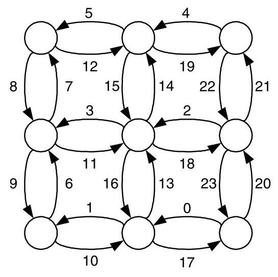
Figure 14.14 Channel ordering induced by the west-first turn model.
图 14.14 西向优先转弯模型诱导的通道排序。
The remaining channels are then numbered from west to east, with the north/south channels in each column numbered in direction order.
其余信道则从西向东进行编号，每列中的北/南向信道按方向顺序编号。
The turn-model and dimension-order routing give two possibilities for restricting a routing algorithm so that it is deadlock-free. However, there are still drawbacks to these techniques. Restricting the routing function reduces the path diversity of the network, which can diminish a network's performance and fault tolerance. In the case of dimension-order routing, the diversity is reduced to zero. Additionally, these techniques cannot remove the channel cycles inherent in topologies such as the torus.
转向模型和维序路由提供了限制路由算法使其无死锁的两种可能方案。然而，这些技术仍然存在缺点。限制路由函数会降低网络的路径多样性，从而可能削弱网络的性能和容错性。在维序路由的情况下，多样性被降为零。此外，这些技术无法消除环面等拓扑中固有的通道循环。
14.2.3 Hybrid Deadlock Avoidance
In the previous sections, we saw that deadlock-free networks can be designed by either splitting network resources and enumerating these resources or appropriately restricting the paths packets could take from source to destination. However, both of these approaches have several drawbacks. The buffer-class approach required a large amount of buffering per node, and restricting the routing algorithm led to reduced path diversity and could not be employed on all topologies. As with many design problems, the most practical solutions to deadlock avoidance combine features of both approaches.
在前面的章节中，我们看到无死锁网络可以通过拆分网络资源并枚举这些资源，或者通过适当限制数据包从源到目的地可采取的路径来设计。然而，这两种方法都有若干缺点。缓冲区分类方法要求每个节点具有大量的缓冲，而限制路由算法会导致路径多样性降低，并且不能用于所有拓扑结构。与许多设计问题一样，最实用的死锁避免解决方案结合了两种方法的特性。
Torus Routing: We can use dimension-order routing to route deadlock free in a torus by applying dateline classes to each dimension. In effect, the dateline classes turn the torus into a mesh - from the point of view of resource dependence - and dimension-order routing routes deadlock-free in the resulting mesh. For example, with flit-buffer flow control, we provision two classes of virtual channels for each physical channel. As a packet is injected into the network, it uses virtual channel 0. If the packet crosses a predefined dateline for each dimension, it is moved to virtual channel 1. When a packet is done routing in a particular dimension, it always enters the next dimension using virtual channel 0.4 This continues until the packet is ejected.
环面路由：我们可以对每个维度应用日期线类，从而在环面网络中使用维序路由实现无死锁。实际上，从资源依赖的角度看，日期线类将环面网络转变为网格网络，而维序路由在所得的网格网络中是无死锁的。例如，采用微片缓冲流控，我们为每条物理通道配置两类虚通道。当分组注入网络时，它使用虚通道0。如果分组在某一维度上跨越了预定义的日期线，就切换到虚通道1。当分组在某个维度的路由结束时，进入下一维度时总是使用虚通道0.4 这一过程持续到分组被排出。
The technique of breaking dependences and then reconnecting paths with virtual channels generalizes to many situations. Revisiting the protocol deadlock described in Section 14.1.5, the dependence between requests and replies may lead to potential deadlocks. A common technique used to work around this problem is to simply assign requests and replies to distinct virtual channels. Now, as long as the underlying algorithm used to route requests and replies is deadlock-free, the request-reply protocol cannot introduce deadlock.
打破依赖关系然后通过虚拟通道重新连接路径的技术可以推广到许多情形。重温第14.1.5节描述的协议死锁，请求与回复之间的依赖可能导致潜在死锁。规避此问题的一种常用技术是直接将请求和回复分配到不同的虚拟通道。此时，只要用于路由请求和回复的底层算法本身无死锁，请求-回复协议就不会引入死锁。
Planar-Adaptive Routing: Another routing technique that combines virtual channels with restricted physical routes is planar-adaptive routing. In planar-adaptive routing, a limited amount of adaptivity is allowed in the routing function while still avoiding cycles in the channel dependence graph. The algorithm starts by defining adaptive planes in a \(k\) -ary \(n\) -mesh. An adaptive plane consists of two adjacent dimensions, \(i\) and \(i + 1\) . Within an adaptive plane, any minimal, adaptive routing algorithm can be used. By limiting the size of a plane to two-dimensions, the number of virtual channels required for deadlock avoidance is independent of the size of the network and the number of dimensions.
平面自适应路由：另一种将虚通道与受限物理路由相结合的路由技术是平面自适应路由。在平面自适应路由中，路由函数允许有限的自适应性，同时仍能避免通道依赖图中出现环路。该算法首先在 \(k\) 元 \(n\) 维网格中定义自适应平面。一个自适应平面由两个相邻维度 \(i\) 和 \(i + 1\) 组成。在自适应平面内，可以使用任何最小自适应路由算法。通过将平面的尺寸限制为二维，避免死锁所需的虚通道数量就与网络规模和维度数量无关。
This is illustrated in Figure 14.15 for a \(k\) -ary 3-mesh. A minimal, adaptive algorithm could use any path within the minimal sub-cube for routing. However, as \(n\) grows, this requires an exponential number of virtual channels to avoid deadlock. Planar-adaptive routing allows adaptive routing within the plane \({A}_{0}\) (defined by dimensions 0 and 1) followed by adaptive routing within the plane \({A}_{1}\) (defined by dimensions 1 and 2). This restriction still allows for large path-diversity, but uses only a constant number of virtual channels.
图14.15对此进行展示，示例为一个 \(k\)-ary 3-mesh 网络。最小自适应算法可在最小子立方体范围内利用任何路径进行路由。然而，随着 \(n\) 的增长，该方法需要指数级别的虚拟通道来避免死锁。平面自适应路由则允许先在平面 \({A}_{0}\)（由维度0和1定义）内进行自适应路由，随后在平面 \({A}_{1}\)（由维度1和2定义）内进行自适应路由。这一限制仍能提供较大的路径多样性，但仅需常数数量的虚拟通道。
For general planar-adaptive routing, each channel is divided into three virtual channels, denoted \({d}_{i, v}\) , where \(i\) is the dimension the virtual channel is in and \(v\) is the virtual channel ID. The adaptive plane \({A}_{i}\) contains the virtual channels \({d}_{i,2},{d}_{i + 1,0}\) , and \({d}_{i + 1,1}\) for \(i = 0,\ldots , n - 2\) . Routing begins in \({A}_{i}\) with \(i = 0\) . Any minimal, adaptive routing algorithm is used to route the packet until the \({i}^{th}\) dimension of the packet’s location matches the \({i}^{th}\) dimension of its destination. Then \(i\) is incremented and routing in the next adaptive plane begins. These steps continue until routing in \({A}_{n - 2}\) is complete. It may be necessary to finish routing minimally in the \({n}^{th}\) dimension before the packet reaches its destination.
对于一般的平面自适应路由，每条通道被划分为三个虚拟通道，记为 \({d}_{i, v}\)，其中 \(i\) 表示该虚拟通道所在的维度，\(v\) 为虚拟通道标识。自适应平面 \({A}_{i}\) 包含虚拟通道 \({d}_{i,2}\)、\({d}_{i + 1,0}\) 和 \({d}_{i + 1,1}\)，其中 \(i = 0,\ldots , n - 2\)。路由从 \(i = 0\) 的 \({A}_{i}\) 开始。采用任一种最小自适应路由算法转发数据包，直到数据包所在位置的第 \(i\) 维与其目的地的第 \(i\) 维一致。随后递增 \(i\)，开始在下一个自适应平面中路由。重复这一过程，直至完成 \({A}_{n - 2}\) 中的路由。在到达目的地之前，可能还需要在维度 \(n\) 中以最小路由完成最后的路由。
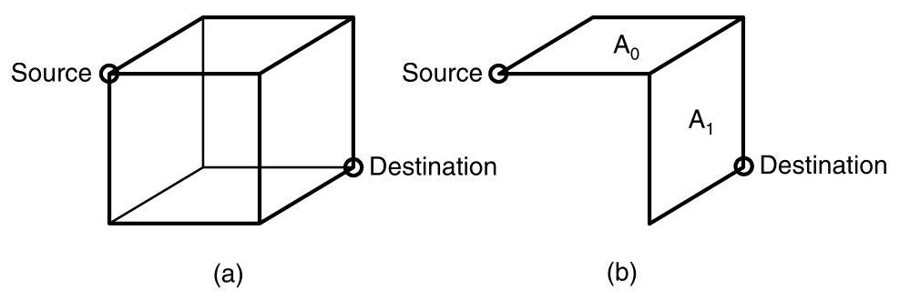
Figure 14.15 (a) The set of all minimal paths between a source and destination node in a \(k\) -ary 3-mesh (b) and the subset of paths allowed in planar-adaptive routing.
图14.15（a）一个\(k\)元3-mesh中源节点和目的节点之间的所有最小路径集合（b）以及平面自适应路由中允许的路径子集。
- This naive assignment creates imbalance in the utilization of the the VCs. More efficient assignments are explored in Exercise 14.6.
- 这种简单的分配方式会导致虚拟通道（VCs）利用率的不平衡。更高效的分配方案将在习题14.6中探讨。
To ensure deadlock-free routing within the \({i}^{th}\) adaptive plane, the virtual channels within that plane are divided into increasing and decreasing subsets. The increasing subset is \({d}_{i,{2}^{ + }}\) and \({d}_{i + 1,0}\) and the decreasing subset is \({d}_{i,{2}^{ - }}\) and \({d}_{i + 1,1}\) , where "+" and "-" denotes the channels that increase or decrease an address in a dimension, respectively. Packets that need to increase their address in the \({i}^{th}\) dimension route exclusively in the increasing network and vice versa. This approach is verified to be deadlock-free in Exercise 14.7.
为确保第 \({i}\) 个自适应平面内的无死锁路由，该平面内的虚拟通道被划分为增加子集和减少子集。增加子集为 \({d}_{i,{2}^{ + }}\) 和 \({d}_{i + 1,0}\)，减少子集为 \({d}_{i,{2}^{ - }}\) 和 \({d}_{i + 1,1}\)，其中“+”和“-”分别表示在某维度上增加或减少地址的通道。需要在第 \({i}\) 维增加地址的数据包仅使用增加网络进行路由，反之亦然。练习 14.7 验证了该方法的无死锁性。
14.3 Adaptive Routing
In the previous sections, we modified the network and routing algorithms to eliminate cyclic dependences in the resource dependence graph. Some of these techniques can naturally be expressed as adaptive routing algorithms. For example, a packet using west-first routing can move an arbitrary number of hops to the west before routing in other directions - this decision could be made adaptively based on network conditions. Some buffer-class approaches can also easily incorporate adaptively.
在前面的章节中，我们修改了网络和路由算法以消除资源依赖图中的循环依赖。这些技术中有一些可以自然地表达为自适应路由算法。例如，使用西向优先路由的包可以在向其他方向路由之前向西移动任意跳数——这一决策可以根据网络状况自适应做出。某些缓冲类方法也可以轻松融入自适应性。
However, the focus of this section is on an important difference between adaptive and oblivious routing algorithms: \({}^{5}\) adaptive routing algorithms can have cycles in their resource dependence graphs while remaining deadlock-free. This result allows the design of deadlock-free networks without the significant limitations on path diversity necessary in the oblivious case.
然而，本节的重点在于自适应路由算法与无感知路由算法之间的一个重要区别：\({}^{5}\) 自适应路由算法的资源依赖图中可以存在环路，同时仍能保持无死锁状态。这一结果使得设计无死锁网络时，无需像无感知路由那样对路径多样性施加显著限制。
14.3.1 Routing Subfunctions and Extended Dependences
The key idea behind maintaining deadlock freedom despite a cyclic channel dependence graph is to provide an escape path for every packet in a potential cycle. As long as the escape path is deadlock-free, packets can move more freely throughout the network, possibly creating cyclic channel dependences. However, the existence of the escape route ensures that if packets ever get into trouble, there still exists a deadlock-free path to their destination.
即使通道依赖图存在环路，仍能维持无死锁的关键思路在于：为潜在环路中的每个数据包提供一条逃逸路径。只要该逃逸路径本身是无死锁的，数据包就能在网络中更自由地移动，即使这可能会产生循环通道依赖。然而，逃逸路由的存在确保了当数据包陷入困境时，仍有一条无死锁的路径通向其目的地。
this is not true in general [160].
这通常并不成立 [160]。
An Example: Consider, for example, a 2-D mesh network that uses flit-buffer flow control with two virtual channels per physical channel. We denote a channel by \({xyd\nu }\) - that is, its node, direction, and virtual channel class (for example, 10e0 is virtual channel class 0 in the east direction on node 10). Routing among the virtual channels is restricted by the following rules.
一个例子：例如，考虑一个使用 flit 缓冲流控制的 2‑D 网格网络，每个物理通道有两个虚拟通道。我们用 \({xyd\nu }\) 表示一个通道——即其节点、方向和虚拟通道类别（例如，10e0 是节点 10 上东方向的虚拟通道类别 0）。虚拟通道之间的路由受以下规则限制。
- All routing is minimal.
- 所有路由均为最短路径。
- A packet in virtual channel xydl is allowed to route to any virtual channel on the other end of the link - any direction, any virtual channel. For example, 00el may route to any of the eight virtual channels on node 10.
- 虚拟通道 xydl 中的数据包允许路由到链路另一端的任意虚拟通道——任意方向、任意虚拟通道。例如，00el 可以路由到节点 10 上的八个虚拟通道中的任意一个。
- A packet in virtual channel xyd0 is allowed to route to virtual channel 1 of any direction on the other end of the link. For example, 00e0 may route to \({10d1}\) for any of the four directions \(d\) .
- 位于虚拟通道 xyd0 中的数据包允许路由到链路另一端任意方向的虚拟通道 1。例如，00e0 可以路由到 \({10d1}\)，其中 \(d\) 为四个方向中的任意一个。
- A packet in virtual channel xyd0 is allowed to route in dimension order ( \(x\) first, then \(y\) ) to virtual channel 0 at the other end of the link. For example, 00e0 may route to 10e0 or 10n0 as well as the four "l" channels on node 10. Channel 00n0 may route only to 01n0 and the four "l" channels on node 01.
- 虚拟通道 xyd0 中的数据包允许按维序（先 \(x\) 后 \(y\)）路由到链路另一端的虚拟通道 0。例如，00e0 可以路由至 10e0 或 10n0，以及节点 10 上的四个 "l" 通道。通道 00n0 只能路由至 01n0 和节点 01 上的四个 "l" 通道。
In short, routing is unrestricted as long as the source or destination virtual channel is from class "1". However, when both source and destination virtual channels are from class "0," routing must be in dimension order.
简而言之，只要源或目的虚拟通道来自类别“1”，路由就不受限制。但是，当源和目的虚拟通道都来自类别“0”时，路由必须按维序进行。
This set of routing rules guarantees deadlock freedom even though cycles exist in the virtual channel dependence graph. An example cycle is shown in Figure 14.16, which shows four nodes' worth of the virtual channel dependence graph for a network employing these routing rules. Only a portion of the dependence edges are shown to avoid cluttering the figure. A dependence cycle is shown that includes the virtual channels \({00e0},{10n0},{11wl}\) , and \({01s1}\) . Each of the four edges of this cycle are legal routes according to the four routing rules above.
这套路由规则保证了无死锁，即便虚拟通道依赖图中存在环路。图14.16展示了一个实例环路，描绘了采用这些路由规则时网络中四个节点的虚拟通道依赖图的一部分。为避免图形杂乱，图中只画出了部分依赖边。图中显示了一个依赖环路，包含虚拟通道 \({00e0},{10n0},{11wl}\) 和 \({01s1}\)。根据上述四条路由规则，该环路的四条边均为合法路由。
Despite this dependence cycle, this routing arrangement is deadlock-free because escape paths exist. Suppose, for example, that packet \(A\) holds virtual channels \({00}\mathrm{e}0\) and \({10}\mathrm{n}0\) and packet \(B\) holds virtual channels \({11}\mathrm{{wl}}\) and \({01}\mathrm{\;{sl}}\) . A deadlocked configuration would occur if \(A\) waits for \({11}\mathrm{{wl}}\) and \(B\) waits for 00e0. However, these packets need not wait on the cyclic resource because they have other options. Packet \(A\) can choose 1 ln 0 instead of 1 lw1. As long as (1) at least one packet in the potential cycle has an acyclic option and (2) packets do not commit to waiting on a busy resource, a deadlocked configuration will not occur. In this example, we are guaranteed that an acyclic option exists for every packet in the cycle, because they can always revert to dimension-order routing on the " 0 " channels, which is guaranteed to be acyclic, as described in Section 14.2.2.
尽管存在此依赖环，但由于逃逸路径的存在，该路由安排仍是无死锁的。例如，假设数据包 \(A\) 持有虚拟通道 \({00}\mathrm{e}0\) 和 \({10}\mathrm{n}0\)，数据包 \(B\) 持有虚拟通道 \({11}\mathrm{{wl}}\) 和 \({01}\mathrm{\;{sl}}\)。如果 \(A\) 等待 \({11}\mathrm{{wl}}\) 而 \(B\) 等待 00e0，就会发生死锁配置。然而，这些数据包不必等待该循环资源，因为它们有其他选择。数据包 \(A\) 可以选择 1 ln 0 而不是 1 lw1。只要 (1) 潜在环中至少有一个数据包具有无环选项，并且 (2) 数据包不会执着于等待忙碌资源，死锁配置就不会发生。在此示例中，我们保证环中的每个数据包都存在无环选项，因为它们始终可以回退到 " 0 " 通道上的维序路由，而如第 14.2.2 节所述，维序路由保证是无环的。
Indirect Dependences: Now consider our 2-D mesh example, but without routing restriction 1 - that is, where non-minimal routing is allowed. Without this restriction, the mesh is no longer guaranteed to be deadlock-free because indirect dependences may result in cycles along the escape channels.
间接依赖：现在考虑我们的2-D mesh示例，但不加路由限制1——即允许非最短路径路由。没有这一限制，mesh 不再保证无死锁，因为间接依赖可能导致沿逃逸通道形成环路。
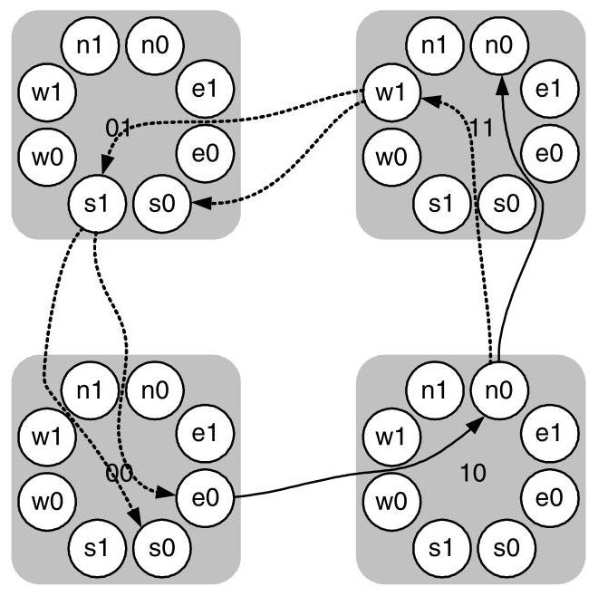
Figure 14.16 Example of cyclic virtual channel dependences with escape paths. The figure shows four nodes of the virtual channel dependence graph for a 2-D mesh network that must follow dimension order routing within the " 0 " channels. A cycle exists in the virtual-channel dependence graph including virtual-channels 00e0, 10n0, 11w1, and 01s1. No deadlock is possible, however, because at three points the packet is free to choose another virtual channel not on the cycle - the escape path.
图14.16 带有逃逸路径的循环虚拟通道依赖示例。该图展示了一个2-D mesh网络中虚拟通道依赖图的四个节点，该网络在“0”通道内必须遵循维序路由。在虚拟通道依赖图中存在一个循环，包括虚拟通道00e0、10n0、11w1和01s1。然而，不可能发生死锁，因为在三个点上，数据包可以自由选择不在循环上的另一个虚拟通道——即逃逸路径。
For example, in Figure 14.16 suppose packet \(A\) is routing to node 12 (not shown) and currently holds channel 00e0. Packet \(B\) , also routing to node 12 has routed non-minimally so that it holds channels 10n0, 11wl, and 01sl. Even though the misrouting was performed on the " 1 " channels (11 wl and 01s1), it creates an indirect dependence on the " 0 " channels — from 10n0 to 00e0. This indirect dependence creates a cycle on the "0" channels. If all of the "1" channels become blocked due to cyclic routing, the " 0 " channels are no longer able to drain the network. Packet \(A\) is waiting on packet \(B\) to release 10n0 before it can make progress along its dimension-order route. At the same time, packet \(B\) is waiting for packet \(A\) to release 00e0 to it to route in dimension order. Hence the " 0 " channels, which are supposed to be a deadlock-free escape path, have become deadlocked due to an indirect dependence.
例如，在图14.16中，假设分组\(A\)正路由至节点12（未画出），且当前持有通道00e0。同样去往节点12的分组\(B\)进行了非最短路径路由，因此它持有通道10n0、11wl和01sl。尽管误路由是在“1”类通道（11wl和01s1）上执行的，它却造成了对“0”类通道的间接依赖——从10n0到00e0。这一间接依赖在“0”类通道上形成了一个环路。如果所有“1”类通道因循环路由而被阻塞，“0”类通道便无法再排空网络。分组\(A\)正在等待分组\(B\)释放10n0，才能沿其维序路由继续前进。同时，分组\(B\)又在等待分组\(A\)释放00e0，以便按维序方式路由。于是，原本应是无死锁逃逸路径的“0”类通道，却因间接依赖而陷入了死锁。
We can avoid indirect dependences by insisting that a packet that visits escape channel ("0" channel) \(a\) is not allowed to route to escape channel \(b\) via any channels, escape or otherwise, if \(b \succ a\) . One easy way to enforce this ordering for our example 2-D network is to insist that routing on the non-escape channels ("1" channels) is minimal.
我们可以通过坚持以下规则来避免间接依赖：若数据包曾使用逃逸通道（“0”通道）\(a\)，则不允许其经由任何通道（逃逸或其他通道）路由到逃逸通道\(b\)，如果 \(b \succ a\)。在我们的二维网络示例中，强制执行这一顺序的一种简单方法是要求非逃逸通道（“1”通道）上的路由必须是最短路径的。
Indirect dependence is a concern only for networks that use flit-buffer flow control. With packet-buffer flow control, a packet can hold only a single buffer at a time. Hence, it is impossible for a packet holding an escape buffer to wait on another escape buffer via some non-escape buffers. The initial escape buffer would be released as soon as the non-escape buffer is acquired.
间接依赖仅在采用 flit 缓冲区流控的网络中才需关注。对于包缓冲区流控，一个包每次只能持有单个缓冲区。因此，持有逃逸缓冲区的包不可能通过某些非逃逸缓冲区再去等待另一个逃逸缓冲区。初始的逃逸缓冲区一旦获取到非逃逸缓冲区就会被释放。
Formal Development: Now that we've introduced the concepts of escape channels and indirect dependence, we can more formally describe deadlock avoidance for adaptive routing. If we have an adaptive routing relation \(R : C \times N \rightarrow \mathcal{P}\left( C\right)\) over a set of virtual channels \(C\) , we can define a routing subrelation \({R}_{1} \subseteq R\) over a subset of the virtual channels \({C}_{1} \subseteq C\) so that \({R}_{1}\) is connected - that is, any source \(s\) can route a packet to any destination \(d\) using \({R}_{1}\) . The entire routing relation \(R\) is deadlock-free if routing subrelation \({R}_{1}\) has no cycles in its extended channel dependence graph. The routes in \(R\) , but not in \({R}_{1}\) , are referred to as the complement subrelation \({R}_{C} = R - {R}_{1}\) . When the arguments of the routing relations are included \(R\left( {c, d}\right)\) , they indicate the packet’s current channel \(c\) and the packet’s destination \(d\) .
形式化展开：在介绍了逃逸通道和间接依赖的概念后，我们现在可以更形式化地描述自适应路由的死锁避免。若在虚拟通道集合 \(C\) 上存在一个自适应路由关系 \(R : C \times N \rightarrow \mathcal{P}\left( C\right)\) ，则可在一个虚拟通道子集 \({C}_{1} \subseteq C\) 上定义一个路由子关系 \({R}_{1} \subseteq R\) ，使得 \({R}_{1}\) 是连通的——即任意源节点 \(s\) 使用 \({R}_{1}\) 可将分组传送到任意目的节点 \(d\) 。若路由子关系 \({R}_{1}\) 的扩展通道依赖图中不存在循环，则整个路由关系 \(R\) 便是无死锁的。位于 \(R\) 中但不在 \({R}_{1}\) 中的路由被称为补子关系 \({R}_{C} = R - {R}_{1}\) 。当包含路由关系的参数时， \(R\left( {c, d}\right)\) 分别表示分组的当前通道 \(c\) 和分组的目点 \(d\) 。
Returning to our example, \(R\) is the entire set of routing rules (rules 1 through 4, above), \(C\) is the set of all virtual channels (both the " 0 " and " 1 " channels, above), \({R}_{1}\) is the set of rules for the escape channels (rule 4, above), and \({C}_{1}\) is the set of escape virtual channels (the " 0 " channels, above). Also, \({R}_{C}\) is the set of routes permitted by \(R\) but not by \({R}_{1}\) (rules 1 through 3, above).
回到我们的例子，\(R\) 是整个路由规则集合（上述规则1至4），\(C\) 是所有虚拟通道的集合（上述“0”和“1”通道），\({R}_{1}\) 是逃逸通道的规则集（上述规则4），\({C}_{1}\) 是逃逸虚拟通道的集合（上述“0”通道）。此外，\({R}_{C}\) 是\(R\)允许但\({R}_{1}\)不允许的路由集合（上述规则1至3）。
The extended resource dependence graph for \({R}_{1}\) has as vertices the virtual channels in \({C}_{1}\) and as edges both the direct dependences and the indirect dependences between channels in \({C}_{1} \cdot {}^{6}\) In short, this is our standard dependence graph extended with indirect dependences. We define the two types of edges in the extended dependence graph more precisely as:
对于 \({R}_{1}\) 的扩展资源依赖图，其顶点为 \({C}_{1}\) 中的虚拟通道，边则包括 \({C}_{1}\) 中通道之间的直接依赖与间接依赖。\(\cdot\) \({}^{6}\) 简而言之，这就是我们标准依赖图中加入了间接依赖的扩展形式。我们将扩展依赖图中两种类型的边更精确地定义为：
direct dependence - This is the same channel dependence considered for deadlock avoidance with oblivious routing. If there exists a node \(x\) such that \({c}_{j} \in {R}_{1}\left( {{c}_{i}, x}\right)\) , there is a channel dependence from \({c}_{i}\) to \({c}_{j}\) . That is, if a route in \({R}_{1}\) uses two channels \({c}_{i}\) and \({c}_{j}\) in sequence, then there is a direct dependence (or just a dependence) between the two channels, which we denote as \({c}_{i} \succ {c}_{j}\) . For example, in Figure 14.16 there is a dependence from 00e0 to \({10}\mathrm{n}0\) , since any packet routing in row 0 to column 1 will use these two virtual channels in sequence.
直接依赖——这与采用 oblivious 路由进行死锁避免时考虑的通道依赖相同。如果存在一个节点 \(x\) 使得 \({c}_{j} \in {R}_{1}\left( {{c}_{i}, x}\right)\) ，则存在从 \({c}_{i}\) 到 \({c}_{j}\) 的通道依赖。即，如果 \({R}_{1}\) 中的一条路由依次使用两条通道 \({c}_{i}\) 和 \({c}_{j}\) ，那么这两条通道之间就存在一个直接依赖（或简称为依赖），我们将其表示为 \({c}_{i} \succ {c}_{j}\) 。例如，在图 14.16 中，从 00e0 到 \({10}\mathrm{n}0\) 存在一个依赖，因为任何在第 0 行发往第 1 列的数据包都会依次使用这两条虚拟通道。
indirect dependence - An indirect dependence is created because our assumptions about flit-buffer flow control allow packets to occupy an arbitrary number of channels concurrently. In this situation, the dependence is created when a path to node \(x\) uses a channel \({c}_{i} \in {R}_{1}\) , followed immediately by some number of channels \({c}_{1},\ldots ,{c}_{m}\) through \({R}_{C}\) , and finally routing through a channel \({c}_{j} \in {R}_{1}\) . For example, in Figure 14.16 with non-minimal routing there is an indirect dependence from 10n0 to 00e0, since a packet holding 10n0 can misroute in \({R}_{C}\) via 11wl and 01sl to node 00 where \({R}_{1}\) dimension order routing requires channel 00e0. With non-minimal routing, this dependence would not exist because a packet that wants to use 00e0 would not be allowed to route in the other direction on 11wl. Implementations sometimes remove indirect dependences by simply disallowing a transition from \({R}_{1}\) to \({R}_{C}\) - once a packet uses the routing sub-function \({R}_{1}\) , it must continue to use \({R}_{1}\) for the rest of its route.
间接依赖——间接依赖的产生是因为我们对微片缓冲流控制的假设允许数据包同时占用任意数量的通道。在这种情况下，当到达节点\(x\)的路径使用一条通道\({c}_{i} \in {R}_{1}\)，紧接着通过\({R}_{C}\)使用一些通道\({c}_{1},\ldots ,{c}_{m}\)，最后通过一条通道\({c}_{j} \in {R}_{1}\)进行路由时，便形成了依赖。例如，在图14.16中，采用非最短路由时，存在从10n0到00e0的间接依赖，因为持有10n0的数据包可以在\({R}_{C}\)中经由11wl和01sl错误路由到节点00，而在节点00处\({R}_{1}\)维序路由需要通道00e0。若采用非最短路由，这种依赖就不会存在，因为希望使用00e0的数据包将不被允许在11wl的另一方向上路由。实现中有时会通过简单地禁止从\({R}_{1}\)到\({R}_{C}\)的转换来消除间接依赖——一旦数据包使用了路由子函数\({R}_{1}\)，它就必须在余下的路由中继续使用\({R}_{1}\)。
- In some routing algorithms where \({R}_{1}\) and \({R}_{C}\) share channels, cross dependences must also be added to the extended dependence graph. This sharing of channels almost never happens in practice, and we will not discuss cross dependences here.
- 在一些路由算法中，\({R}_{1}\) 与 \({R}_{C}\) 共享通道时，还必须将交叉依赖加入到扩展依赖图中。这种通道共享在实践中几乎从不发生，因此我们在此不讨论交叉依赖。
A key result, proved by Duato [61], is that an acyclic, extended channel dependence graph implies a deadlock-free network.
Duato [61] 证明的一个关键结果是，无环的扩展通道依赖图意味着网络无死锁。
An adaptive routing relation \(R\) for an interconnection network is deadlock-free if there exists a routing subrelation \({R}_{1}\) that is connected and has no cycles in its extended channel dependence graph.
对于互连网络，如果一个自适应路由关系 \(R\) 存在一个连通的路由子关系 \({R}_{1}\)，且该子关系在其扩展通道依赖图中无环，则该自适应路由关系 \(R\) 是无死锁的。
THEOREM
定理
14.1
14.1
While our discussion of extended dependences has focused on wormhole flow control, these ideas can be applied to store-and-forward and cut-through networks as well. The key differences are that the extended dependences are simpler and dependences are formed between buffers instead of channels. The simplification is because a packet cannot occupy an arbitrary number of channels when blocked, which eliminates the indirect dependences leaving only direct dependences. If the buffer dependence graph for \({R}_{1}\) of store-and-forward network is acyclic, the network is deadlock-free. The routing subrelation can be examined in isolation from \(R\) , allowing a very flexible definition of \(R\) as long as \({R}_{1}\) is deadlock-free.
虽然我们对扩展依赖关系的讨论主要集中在虫洞流控制上，但这些思想同样适用于存储转发和直通式网络。关键区别在于，扩展依赖关系更简单，且依赖关系形成于缓冲区之间而非通道之间。这种简化是因为数据包在阻塞时不能占用任意数量的通道，从而消除了间接依赖，只留下直接依赖。如果存储转发网络中 \({R}_{1}\) 的缓冲区依赖图是无环的，那么网络就是无死锁的。路由子关系可以独立于 \(R\) 进行检查，这允许对 \(R\) 进行非常灵活的定义，只要 \({R}_{1}\) 是无死锁的即可。
14.3.2 Duato's Protocol for Deadlock-Free Adaptive Algorithms
While Duato's result provides the theoretical groundwork for designing deadlock-free adaptive routing functions, it does not immediately reveal how one might use the ideas to create a practical network design. In this section, we describe the most common technique for applying Duato's result, which allows fully adaptive, minimal routing.
虽然 Duato 的结果为设计无死锁的自适应路由函数提供了理论基础，但它并未立即揭示如何利用这些思想来创建实用的网络设计。在本节中，我们将介绍应用 Duato 结果的最常用技术，该技术可实现完全自适应、最短路径路由。
Duato's protocol has three steps and can be used to help design deadlock-free, adaptive routing functions for both wormhole and store-and-forward networks:
Duato 的协议包含三个步骤，可用于帮助设计无死锁的自适应路由功能，适用于虫孔网络和存储转发网络：
- The underlying network is designed to be deadlock-free. This can include the addition of virtual resources to break any cyclic dependences such as those in the torus.
- 底层网络被设计为无死锁。这可能包括添加虚拟资源来打破任何循环依赖，例如环面网络中的那些。
- Create a new virtual resource for each physical resource in the network. For wormhole networks, these resources are the (virtual) channels and for store-and-forward networks, buffers are the resources. Then, the original set of virtual resources uses the routing relation from Step 1. This is the escape relation, \({R}_{1}\) . The new virtual resources use a routing relation \({R}_{C}\) .
- 为网络中的每个物理资源创建一个新的虚拟资源。对于虫洞网络，这些资源是（虚拟）通道；对于存储转发网络，资源则是缓冲区。然后，原始虚拟资源集合使用步骤1中的路由关系，即逃逸关系\({R}_{1}\)。新增虚拟资源则使用路由关系\({R}_{C}\)。
- For packet-buffer flow control, there are no restrictions on \({R}_{C}\) . For flit-buffer flow control, \({R}_{C}\) must be constructed so that the extended dependence graph of \({R}_{1}\) remains acyclic.
- 对于数据包缓冲区流控，对 \({R}_{C}\) 没有限制。对于微片缓冲区流控，必须构造 \({R}_{C}\)，使得 \({R}_{1}\) 的扩展依赖图保持无环。
The most common use of Duato's protocol creates a minimally adaptive routing algorithm with dimension-order routing as the routing subfunction \({R}_{1}\) . For example, in a 3-ary 2-mesh with wormhole flow control, dimension-order routing is used for \({R}_{1}\) . Then \({R}_{C}\) can contain all minimal paths and \(R = {R}_{1} \cup {R}_{C}\) . The resulting extended dependence graph is acyclic (Figure 14.17).
Duato 协议最常见的用法是创建一个最小自适应路由算法，并以维度顺序路由作为路由子函数 \({R}_{1}\)。例如，在一个采用虫孔流控的 3 元 2 维网格中，将维度顺序路由用作 \({R}_{1}\)。然后 \({R}_{C}\) 可以包含所有最短路径，且 \(R = {R}_{1} \cup {R}_{C}\)。由此产生的扩展依赖图是无环的（图 14.17）。
14.4 Deadlock Recovery
Until now, we have focused on techniques to eliminate the conditions that cause deadlock. These methods required restricted routing functions or additional resources to break cyclic dependences. However, another approach to dealing with deadlock is not to avoid it, but rather to recover from it. Such an approach is attractive when the design cannot accommodate the additional resources or the performance degradation necessary to avoid deadlock. Of course, such techniques rely on the fact that deadlocks will be infrequent and that the average-case performance, rather than the worst-case performance, is considered important.
到目前为止，我们一直专注于消除导致死锁的条件的技术。这些方法需要受限的路由功能或额外资源来打破循环依赖。然而，处理死锁的另一种思路并非避免它，而是在死锁发生后从中恢复。当设计无法容纳避免死锁所需的额外资源或性能下降时，这种方法就很有吸引力。当然，这类技术依赖于这样一个事实：死锁将很少发生，并且平均情况下的性能比最坏情况下的性能更重要。
There are two key phases to any deadlock recovery algorithm: detection and recovery. In the detection phase, the network must realize it has reached a deadlocked configuration. Determining exactly whether the network is deadlocked requires finding a cycle in the resource wait-for graph. Solving this problem is difficult and costly, so most practical detection mechanisms are conservative. A conservative detection always correctly identifies a deadlock, but may also flag network conditions that are not deadlocks (false positives). The introduction of false positives decreases performance, but makes implementation more feasible while still correctly detecting all deadlocks. This type of detection is usually accomplished with timeout counters: a counter is associated with each network resource, which is reset when the resource makes progress (that is, data is sent through the resource). However, if the counter reaches a predetermined threshold, the resource is considered deadlocked and the recovery phase is started.
任何死锁恢复算法都包含两个关键阶段：检测与恢复。在检测阶段，网络必须意识到自身已进入死锁配置。准确判断网络是否死锁需要在资源等待图中找到一个循环。解决该问题既困难又代价高昂，因此大多数实际的检测机制都是保守的。保守检测总能正确识别死锁，但也可能标记出并非死锁的网络状况（假阳性）。引入假阳性会降低性能，但却使实现更为可行，同时仍能正确检测所有死锁。这类检测通常通过超时计数器来完成：为每个网络资源关联一个计数器，当资源取得进展（即通过该资源发送数据）时，计数器重置。然而，如果计数器达到预定阈值，则认为该资源已死锁，并启动恢复阶段。
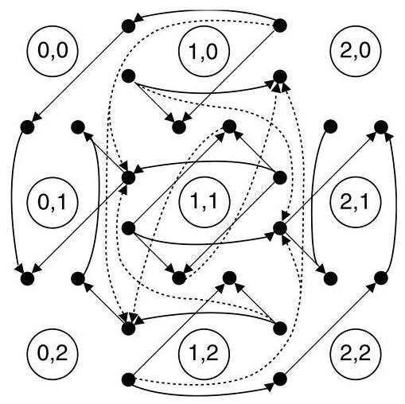
Figure 14.17 Extended channel dependence graph for a 3-ary 2-mesh. Direct (indirect) dependences shown as solid (dotted) lines. Network channels are represented by the filled circles and dependences that can be expressed as a combination of other dependences are not shown.
图14.17 3元2-网格的扩展通道依赖图。直接（间接）依赖分别用实线（虚线）表示。网络通道用实心圆表示，可以表示为其他依赖组合的依赖关系未显示。
14.4.1 Regressive Recovery
In regressive recovery, packets or connections that are deadlocked are removed from the network. This technique can be applied to circuit switching, for example. If a group of partially constructed circuits has formed a wait-for cycle, they are deadlocked. This state persists until a timeout counter for one of the channel reaches a threshold. Then any circuit waiting on that channel is torn down (removed from the network) and retried. This breaks the wait-for dependence, removing the deadlock. To ensure that the source retries the circuit, a Nack can be sent to the source, or the source can retry any circuit that has been pending for more than a threshold time. Here, as with many regressive recovery techniques, special attention must be given to livelock to ensure a retried packet eventually succeeds.
在回归恢复中，处于死锁状态的数据包或连接会从网络中被移除。例如，该技术可应用于电路交换。如果一组部分建立的电路形成了等待循环，它们就会死锁。这种状态会持续，直到其中一个通道的超时计数器达到阈值。随后，任何在该通道上等待的电路都会被拆除（从网络中移除）并重试。这打破了等待依赖关系，从而消除死锁。为确保源端重试该电路，可以向源端发送一个否定确认（Nack），或者源端可以对任何挂起时间超过阈值的电路进行重试。在此过程中，与许多回归恢复技术一样，必须特别注意活锁问题，以确保重试的数据包最终能够成功。
Compressionless routing uses a similar recovery idea for wormhole-based networks. Extra, empty flits are appended to the packets so that the source node can ensure that the destination has received at least one flit by the time it has transmitted the final flit. This is feasible because of the small amount of buffering common to wormhole networks - the minimum length of any packet in compressionless routing is roughly the number of buffers along its path from the source to destination.
无压缩路由对基于虫洞的网络采用了类似的恢复思路。通过向数据包附加额外的空微片，源节点可以确保在发出最后一个微片时，目的节点至少已收到一个微片。这之所以可行，是因为虫洞网络中常见的缓冲量很小——无压缩路由中任何数据包的最小长度，大致等于从源到目的地路径上的缓冲区数量。
When a packet is started, the source node begins a timeout count. This count is reset after each new flit is accepted into the network. If this timeout reaches a threshold value before the last flit has been injected into the network, the entire packet is removed from the network and retried. Once the final flit has been injected, the source is guaranteed that the packet's head has already reached the destination. This implies that the packet has already allocated a path of (virtual) channels all the way to its destination and can no longer be blocked. The primary cost of this approach is the extra padding that must be added to packets. If many short packets are being sent, the maximum throughput can be significantly reduced.
当分组开始发送时，源节点启动一个超时计数。每接受一个新的微片进入网络，该计数便重置。若该超时计数在最后一个微片被注入网络之前达到阈值，则整个分组将从网络中被移除并重试。一旦最终微片已注入，源节点即得到保证，分组的头部已抵达目的地。这意味着该分组已分配到一条通往其目的地的完整（虚）通路，且不再会被阻塞。此方法的主要代价是必须为分组添加额外填充。若大量短分组正被发送，最大吞吐量会显著降低。
14.4.2 Progressive Recovery
Progressive recovery resolves deadlock conditions without removing deadlocked packets from the network. Since network resources are not wasted by sending and then removing packets, progressive recovery techniques have potentially higher performance. Also, livelock issues associated with resending packets are eliminated.
渐进式恢复在不从网络中移除死锁数据包的情况下解决死锁条件。由于网络资源不会因发送后再移除数据包而被浪费，渐进式恢复技术可能具有更高的性能。此外，与重新发送数据包相关的活锁问题也被消除了。
The prevalent progressive recovery approaches implement the ideas of Duato's protocol in hardware. For example, the DISHA [186] architecture provides a shared escape buffer at each node of the network. When a suspected deadlock condition is detected, the shared escape buffer is used as a drain for the packets in the deadlock. Like the routing sub-function, routing using the escape buffer is designed to be deadlock-free.
主流渐进式恢复方法在硬件中实现了杜阿托协议的思想。例如，DISHA [186] 架构在网络每个节点提供一个共享逃逸缓冲区。当检测到疑似死锁条件时，该共享逃逸缓冲区被用作死锁中分组的排出通道。与路由子功能类似，使用逃逸缓冲区的路由设计为无死锁。
Whether or not a hardware implementation of Duato's algorithm is appropriate depends on the relative costs of resource in a particular design. DISHA was designed under the assumption that virtual channels and buffers are expensive network resources, which is certainly true in some applications. However, in other applications the introduction of a centralized resource, in this case the shared escape buffer, may outweigh the impact of additional virtual channels.
特定设计中硬件实现 Duato 算法是否合适，取决于资源的相对成本。DISHA 的设计基于这样一个假设：虚拟通道和缓冲区是昂贵的网络资源，这在某些应用场景中确实成立。然而，在其他应用中，引入集中式资源（在此为共享逃逸缓冲区）的代价可能超过增加额外虚拟通道的影响。
14.5 Livelock
Unlike deadlock, livelocked packets continue to move through the network, but never reach their destination. This is primarily a concern for non-minimal routing algorithms that can misroute packets. If there is no guarantee on the maximum number of times a packet may be misrouted, the packet may remain in the network indefinitely. Dropping flow control techniques can also cause livelock. If a packet is dropped every time it re-enters the network, it may never reach its destination.
与死锁不同，活锁的数据包会继续在网络中移动，但永远无法到达目的地。这主要是非最小路由算法带来的问题，这类算法可能会使数据包误路由。如果对数据包最多可被误路由的次数没有保证，数据包可能会无限期地留在网络中。丢包流控技术也可能导致活锁。如果数据包每次重新进入网络时都被丢弃，它可能永远无法到达目的地。
There are two primary techniques for avoiding livelock, deterministic and probabilistic avoidance. In deterministic avoidance, a small amount of state is added to each packet to ensure its progress. The state can be a misroute count, which holds the number of times a packet has been misrouted. Once the count reaches a threshold, no more misrouting is allowed. This approach is common in non-minimal, adaptive routing. A similar approach is to store an age-based priority in each packet. When a conflict between packets occurs, the highest priority (oldest) packet wins. When used in deflection routing or dropping flow control, a packet will become the highest-priority packet in the network after a finite amount of time. This prevents any more deflections or drops and the packet will proceed directly to its destination.
避免活锁的主要技术有两种：确定性避免和概率性避免。在确定性避免中，会向每个数据包添加少量状态以确保其进展。该状态可以是错误路由计数，它记录数据包被错误路由的次数。一旦计数达到阈值，便不再允许错误路由。这种方法常见于非最短路径的自适应路由中。类似的方法是在每个数据包中存储一个基于年龄的优先级。当数据包之间发生冲突时，最高优先级（最旧）的数据包胜出。当用于偏转路由或丢弃流控制时，经过有限时间后，数据包将成为网络中优先级最高的数据包。这可以防止任何进一步的偏转或丢弃，数据包将直接前往其目的地。
Probabilistic avoidance prevents livelock by guaranteeing the probability that a packet remains in the network for \(T\) cycles approaches zero as \(T\) tends to infinity. For example, we might want to avoid livelock in a 2-ary \(k\) -mesh with deflection routing and single flit packets. \({}^{7}\) The maximum number of hops a packet can ever be from its destination is \({H}_{\max } = 2\left( {k - 1}\right)\) . We then write a string for the history of a packet, where \(t\) denotes a routing decision toward the destination and \(d\) represents a deflection (such as \({tddtdtt}\ldots\) ). If the number of \(t\) ’s in the string minus the number of \(d\) ’s ever exceeds \({H}_{\max }\) , then we know the packet must have reached its destination. As long as the probability of a packet routing toward destination is always non-zero, the probability of this occurring approaches one. Therefore, our network is livelock-free as long as we can always guarantee a non-zero chance of a packet moving toward its destination at each hop.
概率性避免通过保证数据包在网络中停留 \(T\) 个周期的概率在 \(T\) 趋于无穷大时趋近于零，从而防止活锁。例如，我们可能希望在使用偏转路由和单微片数据包的 2 元 \(k\) -mesh 网络中避免活锁。\({}^{7}\) 数据包距离其目的地的最大跳数为 \({H}_{\max } = 2\left( {k - 1}\right)\)。然后我们为该数据包的历史记录编写一个字符串，其中 \(t\) 表示一个朝向目的地的路由决策，\(d\) 表示一次偏转（例如 \({tddtdtt}\ldots\)）。如果字符串中 \(t\) 的数量减去 \(d\) 的数量在任何时候超过 \({H}_{\max }\)，我们就知道该数据包必定已抵达其目的地。只要数据包朝向目的地路由的概率始终非零，这种情况发生的概率就趋近于一。因此，只要我们能在每一跳始终保证数据包有非零的机会向其目的地移动，我们的网络就是无活锁的。
14.6 Case Study: Deadlock Avoidance in the Cray T3E
The Cray T3E [162] is the follow-on to the T3D (Section 8.5). It is built around the Alpha 21164 processor and is scalable up to 272 nodes for a single cabinet machine. Up to 8 cabinets can be interconnected to create liquid-cooled configurations as large as 2,176 nodes. Like the T3D, the T3E's topology is a 3-D torus network. For the 2,176-node machines, the base topology is an 8,32,8-ary 3-cube, which accounts for 2,048 of the nodes. Additional redundant/operating system nodes are then added in half of the \(z\) -dimensional rings, expanding their radix to 9, to bring the total number of nodes to 2,176.
Cray T3E [162] 是 T3D（见第8.5节）的后续产品。它基于 Alpha 21164 处理器构建，单机柜机器最多可扩展到 272 个节点。最多可将 8 个机柜互连，形成规模达 2,176 个节点的液冷配置。与 T3D 一样，T3E 的拓扑结构为三维环网。对于 2,176 节点的机器，基础拓扑为一个 8×32×8 的三维立方体，容纳了其中 2,048 个节点。然后在一半的 \(z\) 维环中添加额外的冗余/操作系统节点，将其基数扩展至 9，从而使节点总数达到 2,176。
Additional latency tolerance in the T3E allowed a step back from the fast ECL gate arrays used to implement the T3D routers and each of T3E routers is implemented as a CMOS ASIC. The extra latency tolerance also allowed the T3E designers to use adaptive routing for improved throughput over the dimension-order routing of the T3D as well as increased fault-tolerance from the routing algorithm's ability to route around faulty links or nodes.
T3E 中额外的延迟容忍使其不再依赖用于实现 T3D 路由器的快速 ECL 门阵列，每个 T3E 路由器均用 CMOS ASIC 实现。额外的延迟容忍还让 T3E 设计者能够采用自适应路由，从而比 T3D 的维序路由获得更高的吞吐量，同时由于路由算法具备绕过故障链路或节点的能力，提高了容错性。
Adaptivity is incorporated into the T3E's routing using the same approach as Du-ato's protocol (Section 14.3.2). The T3E network uses cut-through flow control and each node has enough buffering to always store the largest packet. This ensures that no indirect dependences will ever be created in the extended channel dependence graph. Therefore, it is sufficient for the routing sub-function to be deadlock-free to guarantee that the entire network will be deadlock-free.
按照与 Duato 协议（第 14.3.2 节）相同的方法，T3E 的路由中融入了自适应性。T3E 网络使用切通流量控制，且每个节点都有足够的缓冲，总能存储最大的数据包。这确保在扩展通道依赖图中永远不会产生任何间接依赖。因此，仅需路由子函数是无死锁的，就能保证整个网络无死锁。
The routing sub-function used in the T3E is called direction-order routing: packets are routed first in the increasing \(x\) dimension \(\left( {+x}\right)\) , then in \(+ y, + z, - x, - y\) , and finally \(- z\) . Three bits in the packet header indicate whether each packet traverses a dimension in the increasing or decreasing direction. For example, a packet increasing in all dimensions would route in \(+ x, + y\) , then \(+ z\) , while a packet increasing in all but the \(y\) dimension would route \(+ x, + z\) , then \(- y\) . Momentarily ignoring the intra-dimension cycles caused by the torus topology, direction-order routing is easily shown to be deadlock-free. Conceptually, any cycle in the channel dependence graph would have to contain routes from increasing channels (+) to decreasing channels (-) and vice versa. Although routes are allowed from increasing to decreasing channels, the converse is not true. Therefore, direction-order routing is deadlock-free for the mesh.
T3E 中使用的路由子函数称为方向序路由：数据包首先在递增的 \(x\) 维度 \(\left( {+x}\right)\) 上路由，然后依次是 \(+ y\)、\(+ z\)、\(- x\)、\(- y\)，最后是 \(- z\)。数据包头中的三个比特指示每个数据包在维度上是沿递增还是递减方向穿越。例如，在所有维度上均递增的数据包将按 \(+ x\)、\(+ y\)、\(+ z\) 的顺序路由，而在除 \(y\) 维度外的所有维度上均递增的数据包则会按 \(+ x\)、\(+ z\)、\(- y\) 的顺序路由。若暂时忽略环面拓扑导致的维度内环路，方向序路由很容易被证明是无死锁的。从概念上讲，通道依赖图中的任何环路都必须包含从递增通道（+）到递减通道（-）以及相反的路径。虽然允许从递增通道到递减通道的路由，但反过来则不允许。因此，对于网格来说，方向序路由是无死锁的。
The T3E also allows a slight variation of direction-order routing through the use of initial and final hops. The initial hop a packet takes in the network can be in any of the increasing directions, and the final hop can be in \(- z\) once all other hops are complete. The addition of initial and final hops improves the fault tolerance of the routing algorithm, as illustrated in Figure 14.18. As shown, the faulty channel between node 21 and node 22 blocks the default direction-order route. However, by taking an initial hop in the \(- y\) direction, the packet successfully routes from node 20 to node 03.
T3E 还允许通过使用初始跳和最终跳对方向序路由进行轻微的改变。数据包在网络中进行的初始跳可以是任何递增方向，而最终跳在所有其他跳完成后可以是 \(-z\) 方向。增加初始跳和最终跳提高了路由算法的容错性，如图 14.18 所示。如图所示，节点 21 与节点 22 之间的故障通道阻塞了默认的方向序路由。然而，通过在 \(-y\) 方向进行一次初始跳，数据包成功地从节点 20 路由到节点 03。
Now considering the wrap-around channels of the torus, the T3E adopts a dateline approach as described in Section 14.2.3: any packet traveling across a predetermined dateline within a dimension must start on virtual channel (VC) 0 and transition to virtual channel 1 after the dateline. Packets that do not cross the dateline can use either virtual channel 0 or virtual channel 1, but any particular packet must choose one. In the T3E, the choice of virtual channels for these packets is made with the goal of balancing the load between virtual channels. That is, an optimal assignment of virtual channels exactly balances the average number of packets that traverse each of the virtual channels of a particular physical channel. Because the space of possible VC assignments is so large, a simulated annealing algorithm is used in the T3E to find an approximate solution to this virtual channel balancing problem.
现在考虑圆环形网络的环绕通道，T3E 采用了第 14.2.3 节所述的日期线方法：任何在某一维度上跨越预定日期线的数据包，必须从虚通道（VC）0 开始，并在越过日期线后转换到虚通道 1。不跨越日期线的数据包可以使用虚通道 0 或虚通道 1，但任一特定数据包必须选定其一。在 T3E 中，为这些数据包选择虚通道时，以平衡虚通道之间的负载为目标。也就是说，最优的虚通道分配正好能平衡通过特定物理通道的各个虚通道的平均数据包数量。由于可能的虚通道分配空间过于庞大，T3E 使用模拟退火算法来找到这个虚通道平衡问题的近似解。
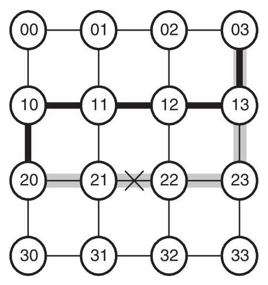
Figure 14.18 The fault-tolerance benefits of allowing an initial hop before direction-order routing begins (only two dimensions are used for simplicity). The default direction-order route from node 20 to node 03 is shown in gray and crosses the faulty channel (marked with X). By taking an initial hop in the \(- y\) direction, the fault is avoided along the bold route.
图 14.18 在方向顺序路由开始前允许一步初始跳跃所带来的容错优势（为简单起见，图中仅使用两个维度）。从节点 20 到节点 03 的默认方向顺序路由以灰色显示，它穿过了标记为 X 的故障通道。通过在 \(- y\) 方向上进行一次初始跳跃，沿加粗路径即可避开该故障。
In the dateline approach, two virtual channels are required to break deadlocks within the dimensions of the tori and another two are used to create separate virtual networks for request and reply messages. This eliminates the high-level deadlock illustrated in Figure 14.6. Finally, one virtual channel is used for minimal adaptive routing, which accounts for the five VCs used in the T3E network.
在日期线方法中，需要两个虚拟通道来打破 torus 各个维度内的死锁，另外两个虚拟通道用于为请求和回复消息创建独立的虚拟网络。这消除了图 14.6 中所示的高层死锁。最后，一个虚拟通道用于最小自适应路由，这就构成了 T3E 网络中使用的五个虚拟通道。
14.7 Bibliographic Notes
Early work on deadlock-free interconnection networks identified the technique of enumerating network resources and traversing these resources an increasing order [129, 70, 78, 57]. Linder and Harden [118] developed a method that makes arbitrary adaptive routing deadlock-free but at the cost of a number of virtual channels that increases exponentially with the number of dimensions. Glass and Ni developed the turn model, which allowed limited adaptivity while still remaining deadlock-free [73]. In different approach, Dally and Aoki allowed some non-minimal adaptivity with a small number of dimension reversals [48].
早期关于无死锁互连网络的研究确定了一种枚举网络资源并以递增顺序遍历这些资源的技术 [129, 70, 78, 57]。Linder 和 Harden [118] 开发了一种方法，使任意自适应路由能够无死锁，但代价是所需虚拟通道的数量随维数呈指数级增长。Glass 和 Ni 开发了转弯模型，该模型在保持无死锁的同时允许有限的自适应性 [73]。在另一种方法中，Dally 和 Aoki 允许通过少量维度逆转实现一些非最小自适应 [48]。
Duato introduced the extended channel dependence graph [60] and refined and extended these results in [61] and [62]. Duato's approach for designing deadlock-free adaptive routing algorithms has since been used in several networks such as the Reliable Router [52], the Cray T3E, and the Alpha 21364 [131].
杜阿托引入了扩展通道依赖图 [60]，并在文献 [61] 和 [62] 中完善并拓展了这些结果。此后，杜阿托设计无死锁自适应路由算法的方法已被多个网络采用，如可靠路由器 [52]、Cray T3E 和 Alpha 21364 [131]。
Other, more specific, deadlock-free routing algorithms include planar adaptive routing [36] as described in Section 14.2.3. In irregular network topologies, deadlock can be avoided with the up/down algorithm [70] which is employed in the DEC AutoNet [159], for example. Gravano et al. introduced the *-channels and other algorithms [76], which use similar ideas as Duato to incorporate adaptivity into the torus. Kim et al. describe compressionless routing [98], which employs circuit switching ideas rather than the mainly packet switching approaches we have focused on in this chapter. While most systems choose deadlock avoidance, Anjan and Pinkston describe the DISHA deadlock recovery scheme [186].
其他更具体的无死锁路由算法包括第 14.2.3 节所述的平面自适应路由 [36]。在不规则网络拓扑中，可以采用 DEC AutoNet [159] 等系统中使用的上/下算法 [70] 来避免死锁。Gravano 等人提出了 *-通道及其他算法 [76]，其采用与 Duato 类似的思路将自适应性融入环面网络。Kim 等人描述了无压缩路由 [98]，该方法借鉴了电路交换的思想，而非本章主要关注的分组交换方法。虽然大多数系统选择死锁避免，但 Anjan 和 Pinkston 描述了 DISHA 死锁恢复方案 [186]。
The problem of VC misbalance caused by many deadlock avoidance schemes was studied specifically in the torus by Bolding [25]. In addition to the simulated annealing approach by Scott and Thorson described in the Cray T3E case study, the U.S. Patent held by Cray covers some additional VC load-balancing approaches [30].
许多死锁避免方案引起的VC失衡问题，已由Bolding在环面网络中具体研究[25]。除了Cray T3E案例研究中Scott和Thorson描述的模拟退火方法外，Cray持有的美国专利还涵盖了若干附加的VC负载均衡方法[30]。
Schwiebert [160] shows that it is possible to have oblivious routing algorithms with cyclic channel dependences while still being deadlock-free. However, current examples of this behavior require unusual routing function and topologies.
Schwiebert [160] 表明，遗忘路由算法可能存在循环通道依赖，但仍然无死锁。然而，当前展示这种行为的例子需要不寻常的路由函数和拓扑结构。
14.8 Exercises
14.1 Deadlocked configuration. Consider the example of Figure 14.5, but with the criteria that a packet may use either virtual channel at each hop, whichever becomes free first. Draw a wait-for graph for a deadlocked configuration of this network.
14.1 死锁配置。考虑图14.5中的例子，但附加条件：数据包在每一跳可以使用任意一个先空闲下来的虚拟通道。请画出该网络一个死锁配置的等待图。
14.2 Deadlock freedom of simple routing algorithms. Determine whether the following oblivious routing algorithms are deadlock-free for the 2-D mesh. (Show that the channel dependence graph is either acyclic or contains a cycle.)
本章考察互连网络中的死锁与活锁。当代理（数据包或连接）在等待其他代理持有的资源（缓冲区或通道）的同时持有资源，从而形成循环等待图时，就会发生死锁。资源依赖图中存在环路是必要条件。核心研究问题是如何保证无死锁，这至关重要，因为死锁会使网络瘫痪。
避免死锁的关键策略包括对资源获取施加偏序。基于距离或分界线的资源类通过要求代理必须按类号递增顺序使用资源来消除环路。另一种方法是通过维序路由或转弯模型来限制物理路径，从而在不增加额外资源的情况下打破循环依赖。混合方法则结合两者：例如，torus 网络使用分界线虚通道将 torus 转换为无环网格，而平面自适应路由将自适应性限制在二维平面内，以控制虚通道成本。
只要存在逃逸路径，自适应路由就能够容忍依赖环路。Duato 协议添加了为无死锁路由子功能保留的虚通道；只要该子功能的扩展依赖图（包括间接依赖）无环，整个自适应算法就保持无死锁。另一种方法是死锁恢复，它通过基于超时的检测，随后进行撤回式（移除数据包）或前向式（共享逃逸缓冲区）恢复来处理死锁。
活锁是指数据包虽然在移动但永远无法到达目的地，防止活锁的方法是对误路由施加确定性限制，或通过概率性保证确保前进概率非零。
Cray T3E 展示了这些原理：它使用方向顺序路由作为逃逸子功能，为 torus 分界线和请求/应答分离添加虚通道，并平衡虚通道负载。总之，无死锁设计是通过结构化资源分配、路由限制或提供逃逸路径来实现的，具体选择取决于性能和资源约束。
(a) Randomized dimension-order: All packets are routed minimally. Half of the packets are routed completely in the \(X\) dimension before the \(Y\) dimension and the other packets are routed \(Y\) before \(X\) .
(a) 随机化维序：所有数据包均按最短路径路由。一半的数据包在 \(Y\) 维之前完全沿 \(X\) 维路由，而另一半数据包则在 \(X\) 维之前沿 \(Y\) 维路由。
(b) Less randomized dimension-order: All packets are routed minimally. Packets whose minimal direction is increasing in both \(X\) and \(Y\) always route \(X\) before \(Y\) . Packets whose minimal direction is decreasing in both \(X\) and \(Y\) always route \(Y\) before \(X\) . All other packets randomly choose between \(X\) before \(Y\) and vice versa.
（b）减少随机化的维序路由：所有数据包均按最短路径路由。对于在 \(X\) 和 \(Y\) 方向均为递增的最短方向数据包，始终先沿 \(X\) 方向再沿 \(Y\) 方向路由。对于在 \(X\) 和 \(Y\) 方向均为递减的最短方向数据包，始终先沿 \(Y\) 方向再沿 \(X\) 方向路由。其余数据包则在“先 \(X\) 后 \(Y\)”与“先 \(Y\) 后 \(X\)”之间随机选择。
(c) Limited-turns routing for the 2-D mesh: All routes are restricted to contain at most three right turns and no left turns.
(c) 二维网格的受限转弯路由：所有路由限制最多只能包含三个右转弯，并且不允许有左转弯。
14.3 Compound cycles in the turn model. Explain why the fourth turn elimination option in Figure 14.13(c) does not result in a deadlock-free routing algorithm.
14.3 转弯模型中的复合循环。解释为什么图14.13(c)中的第四种转弯消除选项不能产生无死锁的路由算法。
14.4 Necessary number of disallowed turns. Use the ideas of the turn model to find a lower bound on the number of turns that must be eliminated when routing in a \(k\) -ary \(n\) -mesh to ensure deadlock freedom.
14.4 必须禁止的转向数量下界。利用转向模型的思想，找出在 \(k\) 元 \(n\) 维网格中为确保无死锁而必须消除的转向数量下界。
14.5 Enumerating turn model channels. Number the channels of a \(3 \times 3\) mesh network in a manner similar to that shown in Figure 14.14, but for the north-last routing restriction.
14.5 枚举转弯模型通道。按照类似于图14.14所示的方式，对\(3 \times 3\)网格网络的通道进行编号，但需采用末尾向北路由限制。
14.6 Balancing virtual-channel utilization. In Section 14.2.3, virtual channels were used to remove the cyclic dependences in a ring network. However, the simple dateline approach discussed has poor balancing between the virtual channels. For example, virtual channel 1 from node 4 to 1 is used only by packets routed from node 2 to node 1 and virtual channel 1 from 1 from node 1 to 2 is not used at all. Describe a new routing algorithm of the form \(C \times N \mapsto C\) that better balances the virtual channels and is also deadlock-free.
14.6 平衡虚拟信道利用率。在第14.2.3节中，使用虚拟信道消除了环形网络中的循环依赖。然而，所讨论的简单数据报方法在虚拟信道之间的负载均衡性较差。例如，从节点4到1的虚拟信道1仅由从节点2路由到节点1的数据包使用，而从节点1到2的虚拟信道1则完全未被使用。请描述一种形式为 \(C \times N \mapsto C\) 的新路由算法，该算法能更好地平衡虚拟信道并同时确保无死锁。
14.7 Deadlock freedom of planar adaptive routing. Show that planar adaptive routing (Section 14.2.3) is deadlock-free in \(k\) -ary \(n\) -meshes.
14.7 平面自适应路由的无死锁性。证明平面自适应路由（第 14.2.3 节）在 \(k\) -ary \(n\) -meshes 中是无死锁的。
14.8 Fault-tolerant planar adaptive routing. Fault-tolerant planar adaptive routing (FPAR) extends the basic planar adaptive routing algorithm to avoid faults (non-functioning nodes or channels).
14.8 容错平面自适应路由。容错平面自适应路由（FPAR）扩展了基本的平面自适应路由算法，以避开故障（失效的节点或通道）。
(a) To allow for faulty nodes in the final dimension, FPAR adds the adaptive plane \({A}_{n - 1}\) containing the previously unused channels \({d}_{n - 1,2},{d}_{0,0}\) , and \({d}_{0,1}\) . Then routing proceeds from adaptive plane \({A}_{0}\) to \({A}_{n - 1}\) , as in planar-adaptive routing, but with the addition of the extra plane. Show that there are no cyclic dependences between adaptive planes.
(a) 为了容纳最终维度中的故障节点，FPAR 新增了自适应平面 \({A}_{n - 1}\)，其中包含先前未使用的通道 \({d}_{n - 1,2}、{d}_{0,0}\) 和 \({d}_{0,1}\)。随后，路由过程从自适应平面 \({A}_{0}\) 依次进展到 \({A}_{n - 1}\)，与平面自适应路由类似，但增加了这个额外平面。证明自适应平面之间不存在循环依赖。
(b) When routing in the plane \({A}_{i}\) , if \({d}_{i}\) or \({d}_{i + 1}\) is blocked by a fault, a non-faulty channel is chosen as long as that channel is also minimal. It may happen that the packet has finished routing in the \({\left( i + 1\right) }^{\text{ th }}\) dimension and a fault exists in \({d}_{i}\) . In this case, misrouting is required in \({d}_{i + 1}\) - if the packet was routing in \({d}_{i + 1}\) , it continues in the same direction, otherwise an arbitrary direction in \({d}_{i + 1}\) is chosen for misrouting. This misrouting continues until the first non-faulty channel in \({d}_{i}\) is found, which is taken. Then the packet continues in \({d}_{i}\) until its first opportunity to "correct" the misrouting in \({d}_{i + 1}\) . After the distance in \({d}_{i + 1}\) had again been reduced to zero, normal routing is resumed. This procedure's details are complex, but in essence it attempts to simply steer around faulty regions (Figure 14.19). The converse case of being finished in \({d}_{i}\) with a fault in \({d}_{i + 1}\) does not occur because once routing is done in \({d}_{i}, i\) is incremented. Show that FPAR is deadlock-free within a single adaptive plane \({A}_{i}\) in a \(k\) -ary \(n\) -mesh. Does it follow that the entire routing algorithm is also deadlock-free?
（b）在平面 \({A}_{i}\) 中路由时，若 \({d}_{i}\) 或 \({d}_{i + 1}\) 被故障阻塞，则只要所选通道仍为最短，就选择一条无故障通道。可能出现分组已完成第 \({\left( i + 1\right) }^{\text{ th }}\) 维的路由，而 \({d}_{i}\) 中存在故障的情况。此时，需要在 \({d}_{i + 1}\) 进行错误路由——若分组正在 \({d}_{i + 1}\) 中路由，则继续沿相同方向；否则在 \({d}_{i + 1}\) 中任意选择一个方向进行错误路由。该错误路由过程持续进行，直至在 \({d}_{i}\) 中找到第一条无故障通道并采用。随后，分组继续在 \({d}_{i}\) 中路由，直到首次机会在 \({d}_{i + 1}\) 中“纠正”此前的错误路由。当 \({d}_{i + 1}\) 中的距离再次减为零后，恢复正常路由。此过程的细节较为复杂，但本质上试图简单地绕过故障区域（图14.19）。在 \({d}_{i}\) 中已完成路由而 \({d}_{i + 1}\) 中存在故障的相反情况不会发生，因为一旦在 \({d}_{i}\) 中完成路由，\(i\) 即被递增。证明在 \(k\) 元 \(n\) 维网格中，FPAR 在单个自适应平面 \({A}_{i}\) 内是无死锁的。这是否意味着整个路由算法也是无死锁的？
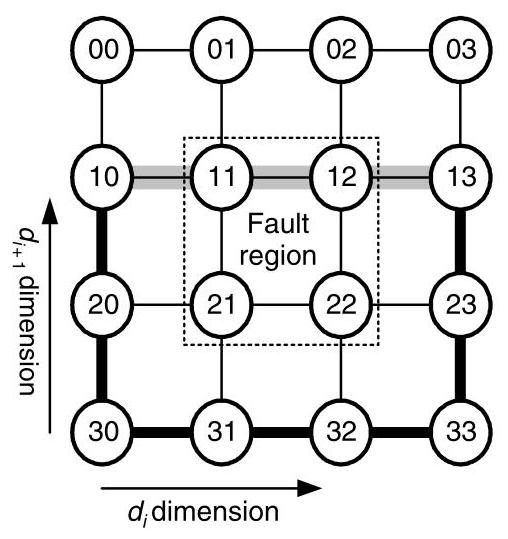
Figure 14.19 An example of misrouting in fault-tolerant planar-adaptive routing. A faulty region of nodes and channels (denoted by the dotted box) blocks the minimal path from node 10 to 13 in the \({A}_{i}\) plane and the minimal distance in the \({\left( i + 1\right) }^{th}\) dimension is zero. So, misrouting is required in \({d}_{i + 1}\) to route around the faulty region.
图 14.19 容错平面自适应路由中错误路由的一个示例。由节点和通道组成的故障区域（以虚线框表示）阻塞了 \({A}_{i}\) 平面内从节点 10 到 13 的最短路径，且第 \({\left( i + 1\right) }^{th}\) 维上的最短距离为零。因此，需要在 \({d}_{i + 1}\) 维度上进行错误路由以绕过故障区域。
14.9 Deadlock analysis of routing in the Cray T3E. Show that direction-order routing (Section 14.6) is deadlock-free in a \(k\) -ary 3-mesh by enumerating the channels. Does this enumeration also prove that the initial and final hop variation used in the Cray T3E is also deadlock free? If not, create a new channel enumeration that does. Now consider a further extension of the T3E's routing algorithm that allows an arbitrary number of initial hops in any of the positive (+) dimensions, in any order. Is this extension also deadlock free?
14.9 Cray T3E 中路由的死锁分析。说明通过枚举通道，方向序路由（第 14.6 节）在 \(k\) 元 3-网格中是无死锁的。这个枚举是否也证明了 Cray T3E 中使用的初始跳和最终跳变化也是无死锁的？如果不是，请创建一个新的通道枚举来证明。现在考虑对 T3E 路由算法的进一步扩展，允许在任意正（+）维度上以任意顺序进行任意数量的初始跳。这种扩展是否也是无死锁的？
14.10 Virtual channel cost of randomized dimension traversal order. You have designed a randomized variant of dimension-order routing for the \(k\) -ary \(n\) -mesh in which the order dimensions are traversed is completely random. This gives \(n\) ! possible dimension traversal orders. Of course, if each traversal order is given its own virtual channel, the routing algorithm is deadlock-free. However, \(n\) ! virtual channels can be costly for high-dimensional networks. Can you find a deadlock-free virtual channel assignment that uses fewer virtual channels?
14.10 随机化维度遍历顺序的虚拟通道成本。你为 \(k\) 元 \(n\) 维 mesh 设计了一种随机化的维度顺序路由变体，其中维度的遍历顺序是完全随机的。这样就有 \(n\) ! 种可能的维度遍历顺序。当然，如果为每个遍历顺序分配自己的虚拟通道，该路由算法就是无死锁的。然而，对于高维网络而言，\(n\) ! 个虚拟通道可能代价高昂。你能否找到一种使用更少虚拟通道的无死锁虚拟通道分配方案？
14.11 Probabilistic livelock avoidance with variable size packets. Explain why the probabilistic argument for livelock freedom in a deflection routing network does not necessarily apply to networks with multi-flit packets. Assume that packets are pipelined across the network as in wormhole flow control and each input port has one flit of buffering. Construct a scenario with multi-flit packets and deflection routing that does livelock.
14.11 可变大小数据包的概率性活锁避免。解释为什么在偏转路由网络中保证活锁自由的概率性论证不必然适用于多微片数据包的网络。假设数据包以虫洞流控方式在网络上流水线传输，且每个输入端口具有一个微片的缓冲。构造一个多微片数据包与偏转路由下的活锁场景。